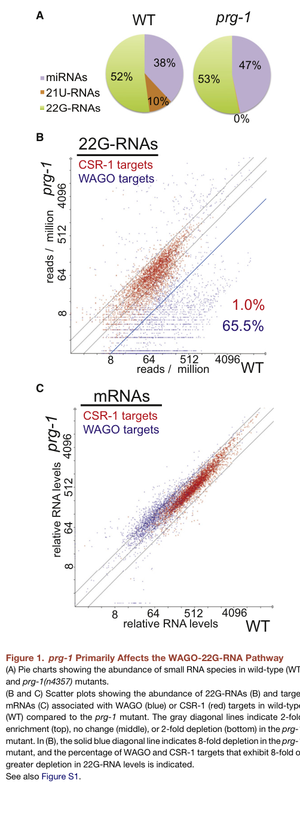

PRG-1 is the main Piwi-class Argonaute protein in C. elegans, functioning as the central effector of the piRNA (21U-RNA) pathway. PRG-1 binds 21U-RNAs and localizes to P granules throughout the germline, where it functions in germline surveillance to recognize and silence foreign sequences including transposons. The PRG-1/piRNA pathway triggers gene silencing by recruiting RNA-dependent RNA polymerases to produce secondary 22G-RNAs that associate with WAGO Argonautes. PRG-1 is essential for fertility, and prg-1 mutants show a mortal germline phenotype with transgenerational decline in fertility. PRG-2, the other C. elegans Piwi protein, has little or no detectable function.
| GO Term | Evidence | Action | Reason |
|---|---|---|---|
|
GO:0005634
nucleus
|
IBA
GO_REF:0000033 |
UNDECIDED |
Summary: PRG-1 is enriched in cytoplasmic P granules, while the nuclear IBA remains unresolved.
Reason: PRG-1 enrichment in cytoplasmic-face P granules is directly established, including loading-dependent localization in PMID:41529195. This does not exclude a minor, transient or condition-dependent nuclear pool. The focused OpenScientist report identifies no direct nuclear-pool quantitation; its inference that a positive UniProt cytoplasm record (ECO:0000256) or P-granule IDA contradicts nucleus localization is not valid exclusion evidence. The broad ancestral assertion at PTN001875625 remains unresolved, rather than refuted or eligible for a NOT annotation.
Propagation Review
Root cause:
UNRESOLVED
Sources checked:
PANTHER:PTN001875625
· PTN001875625
UNRESOLVED
The deep Argonaute nuclear-localization assertion is traceable; P-granule enrichment alone does not establish a loss on the PRG-1 lineage.
Supporting Evidence:
PMID:18501605
PRG-1 is localized to P granules in germ cells entering spermatogenesis
PMID:18571452
The PRG-1 protein is expressed throughout development and localizes to nuage-like structures called P granules
PMID:41529195
disrupts PRG-1 localization to perinuclear germ granules.
file:worm/prg-1/prg-1-hypotheses/nuclear-localization-and-pirna-processing/openscientist.md
High for perinuclear; no nuclear-pool quantitation
|
|
GO:0031047
regulatory ncRNA-mediated gene silencing
|
IBA
GO_REF:0000033 |
ACCEPT |
Summary: PRG-1 functions in piRNA-mediated gene silencing in C. elegans. The PRG-1/21U-RNA complex triggers gene silencing of non-self sequences by recruiting RNA-dependent RNA polymerases to produce WAGO-associated 22G-RNAs. This is a core function of the piRNA pathway (PMID:18571452).
Reason: This annotation accurately captures the core function of PRG-1 in regulatory ncRNA-mediated gene silencing. PRG-1 binds 21U-RNAs (piRNAs) and uses them to silence target genes, particularly foreign sequences and transposons.
Supporting Evidence:
PMID:18571452
21U-RNAs are the piRNAs of C. elegans and link this class of small RNAs and their associated Piwi Argonaute to the maintenance of temperature-dependent fertility
file:worm/prg-1/prg-1-deep-research-falcon.md
initiating silencing by **recruiting RNA-dependent RNA polymerase (RdRP)–driven secondary 22G-RNA amplification**
file:worm/prg-1/prg-1-deep-research-falcon.md
binds piRNAs and **scans germline transcripts** using **imperfect but extensive base-pairing**
|
|
GO:0004521
RNA endonuclease activity
|
IBA
GO_REF:0000033 |
KEEP AS NON CORE |
Summary: PRG-1 has reported slicer activity, although major silencing outputs do not require it.
Reason: PMID:22700655 reports recombinant PRG-1 slicing in vitro; PMID:34428467 explicitly recognizes this activity while finding it dispensable for limiting RNAi inheritance. The prior claim that no direct assay existed was incorrect. Retain the molecular activity while keeping the recruitment-dependent germline silencing mechanism distinct.
Propagation Review
Root cause:
NO FAILURE NON CORE
Sources checked:
PANTHER:PTN008584027
· PTN008584027
SUPPORTS TRANSFER
The ancestral slicer assertion is supported by recombinant PRG-1 activity; dispensability in particular genetic assays is not loss of catalytic capacity.
Supporting Evidence:
PMID:22700655
recombinant PRG-1 appears to have some slicing activity in vitro
PMID:34428467
Thus, Slicer activity is not required for PRG-1 to limit RNAi inheritance
|
|
GO:0034587
piRNA processing
|
IBA
GO_REF:0000033 |
UNDECIDED |
Summary: Precursor binding is established, but a PRG-1 processing-platform role is not resolved by the cited experiments.
Reason: The focused report supports noncatalytic participation by proposing that PRG-1 holds precursors during PARN-1 trimming. However, PMID:26919432 full text instead models trimming prior to or independently of PRG-1 loading and shows that untrimmed piRNAs become stable on PRG-1 in parn-1 mutants. It suggests PRG-1 or other factors might limit trimming, without demonstrating that mechanism. PMID:34469728 shows trimming/methylation protect against tailing; PMID:38244197 shows PRG-1-bound untrimmed piRNAs and anti-piRNAs in trimming-defective mutants. These are substantive precursor-binding observations but do not establish the report's normal maturation sequence. A direct positioning or assembly role would qualify without PRG-1 catalysis; neither conserved PIWI processing participation nor a PRG-1-specific loss is resolved here.
Propagation Review
Root cause:
UNRESOLVED
Sources checked:
PANTHER:PTN002339693
· PTN002339693
UNRESOLVED
PIWI processing IBD at PTN002339693 is recovered. PRG-1 binds untrimmed RNAs in parn-1 mutants, but the cited primary paper leaves whether normal trimming occurs before or independently of loading unresolved; the provider platform model exceeds the experiment.
Supporting Evidence:
PMID:26919432
the exonuclease PARN-1 mediates 3′ trimming of piRNA precursors prior to, or independently, from PRG-1 loading
PMID:26919432
PRG-1 or other factors may be required to limit PARN-1 processing in vivo.
PMID:38244197
These anti-piRNAs form duplexes with untrimmed piRNAs, which are loaded onto PRG-1
|
|
GO:0007283
spermatogenesis
|
IBA
GO_REF:0000033 |
ACCEPT |
Summary: PRG-1 has a well-documented role in spermatogenesis. PRG-1 is localized to P granules in germ cells entering spermatogenesis and is required for successful spermatogenesis (PMID:18501605). Loss of prg-1 causes defects in sperm activation and fertilization. This is also supported by experimental evidence (IMP from PMID:9851978).
Reason: The role of PRG-1 in spermatogenesis is well-established by multiple studies. While PRG-1 also affects oogenesis, spermatogenesis defects are prominent in prg-1 mutants.
Supporting Evidence:
PMID:18501605
PRG-1 is localized to P granules in germ cells entering spermatogenesis and is required for successful spermatogenesis
PMID:18501605
prg-1 mutant sperm exhibit extensive defects in activation and fertilization
|
|
GO:0043186
P granule
|
IBA
GO_REF:0000033 |
ACCEPT |
Summary: P granule localization is a core characteristic of PRG-1. This is experimentally demonstrated by IDA evidence from PMID:18501605 and PMID:18571452.
Reason: P granule localization is one of the best-characterized features of PRG-1 and is confirmed by multiple experimental studies.
Supporting Evidence:
PMID:18571452
The PRG-1 protein is expressed throughout development and localizes to nuage-like structures called P granules
PMID:18501605
PRG-1 is localized to P granules in germ cells
file:worm/prg-1/prg-1-deep-research-falcon.md
PRG-1 acts in the germline and is described as localizing to **perinuclear germ granules/P granules**
file:worm/prg-1/prg-1-deep-research-falcon.md
with enrichment in **Z granules**
|
|
GO:0034584
piRNA binding
|
IBA
GO_REF:0000033 |
ACCEPT |
Summary: PRG-1 binds 21U-RNAs, which are the piRNAs of C. elegans (PMID:18571452). This is the core molecular function of PRG-1 as a Piwi Argonaute protein. The more specific C. elegans term GO:0034583 (21U-RNA binding) is supported by experimental IPI evidence.
Reason: piRNA binding is the central molecular function of PRG-1. The IBA annotation is appropriate as the general piRNA binding term, complementing the more specific 21U-RNA binding term that has direct experimental support.
Supporting Evidence:
PMID:18571452
21U-RNAs are the piRNAs of C. elegans
file:worm/prg-1/prg-1-deep-research-falcon.md
PRG-1** is the organism’s **Piwi-clade Argonaute** protein that binds **piRNAs (21U-RNAs)**
file:worm/prg-1/prg-1-deep-research-falcon.md
Mature piRNAs are typically **~21 nt** and strongly biased for **5′ U**
|
|
GO:0003676
nucleic acid binding
|
IEA
GO_REF:0000002 |
ACCEPT |
Summary: Nucleic-acid binding is a valid broad description of PRG-1 guide binding.
Reason: PRG-1 binds 21U-RNAs through its conserved Argonaute domains. The more specific piRNA-binding annotation adds detail; it does not make the InterPro parent term an over-annotation.
|
|
GO:0003723
RNA binding
|
IEA
GO_REF:0000120 |
ACCEPT |
Summary: IEA annotation from InterPro and UniProt keywords. RNA binding is a valid general annotation for PRG-1, but more specific piRNA/21U-RNA binding annotations exist.
Reason: RNA binding is a valid molecular function annotation for PRG-1. While more specific terms (piRNA binding, 21U-RNA binding) are available and preferred, this general annotation from automated methods is not incorrect.
|
|
GO:0005737
cytoplasm
|
IEA
GO_REF:0000120 |
ACCEPT |
Summary: PRG-1 localizes to P granules, which are cytoplasmic structures. The more specific P granule annotation is preferred, but cytoplasm is not wrong.
Reason: Cytoplasmic localization is consistent with P granule localization. This general term is acceptable alongside the more specific P granule annotation.
|
|
GO:0007279
pole cell formation
|
IEA
GO_REF:0000117 |
REMOVE |
Summary: Pole cell formation is defined as the formation of cells at the posterior pole of the insect blastula that are precursors to germ cells. This is a Drosophila-specific process that does not occur in C. elegans. C. elegans has a different mechanism of germ cell specification.
Reason: This is an erroneous ARBA machine learning annotation. Pole cell formation (GO:0007279) is explicitly defined as an insect process occurring in blastula stage, which is not applicable to C. elegans developmental biology. C. elegans germ cell specification occurs through different mechanisms.
|
|
GO:0009994
oocyte differentiation
|
IEA
GO_REF:0000117 |
KEEP AS NON CORE |
Summary: PRG-1 is required for fertility and functions in the germline, which includes oogenesis. The prg-1 mutants have fertility defects that are temperature-dependent (PMID:18571452).
Reason: While PRG-1 is required for fertility and germline maintenance, its primary function is in piRNA-mediated gene silencing rather than oocyte differentiation per se. The fertility defects may be secondary to dysregulated gene expression from loss of piRNA-mediated silencing rather than a direct role in oocyte differentiation.
|
|
GO:0010526
transposable element silencing
|
IEA
GO_REF:0000117 |
ACCEPT |
Summary: The piRNA pathway is a major transposon defense mechanism. PRG-1 and 21U-RNAs function in germline surveillance to recognize and silence foreign sequences including transposons.
Reason: Transposable element silencing is a well-established function of the
piRNA pathway. PRG-1 as the main Piwi Argonaute in C. elegans plays a
key role in this process. Falcon deep research adds the nuance that
PRG-1 has a surprisingly limited set of clearly established direct
transposon targets in C. elegans (with Tc3 as the prominent example),
while still providing genome-wide surveillance capacity via
mismatch-tolerant recognition and contributing to de novo establishment
of transposon silencing states.
Supporting Evidence:
file:worm/prg-1/prg-1-deep-research-falcon.md
safeguard germline genome integrity** by targeting foreign sequences, transgenes, and some transposable elements
file:worm/prg-1/prg-1-deep-research-falcon.md
PRG-1 has a surprisingly limited set of clearly established transposon targets
file:worm/prg-1/prg-1-deep-research-falcon.md
Tc3** cited as a prominent PRG-1-dependent transposon family
|
|
GO:0016787
hydrolase activity
|
IEA
GO_REF:0000043 |
KEEP AS NON CORE |
Summary: PRG-1 has reported slicer activity, although major silencing outputs do not require it.
Reason: PMID:22700655 reports recombinant PRG-1 slicing in vitro; PMID:34428467 explicitly recognizes this activity while finding it dispensable for limiting RNAi inheritance. The prior claim that no direct assay existed was incorrect. Retain the molecular activity while keeping the recruitment-dependent germline silencing mechanism distinct.
Supporting Evidence:
PMID:22700655
recombinant PRG-1 appears to have some slicing activity in vitro
PMID:34428467
Thus, Slicer activity is not required for PRG-1 to limit RNAi inheritance
|
|
GO:0031047
regulatory ncRNA-mediated gene silencing
|
IEA
GO_REF:0000043 |
ACCEPT |
Summary: Duplicate of IBA annotation above. This IEA annotation from UniProt keywords also captures the core function of PRG-1 in gene silencing.
Reason: This annotation captures the same core function as the IBA annotation above. Both appropriately describe PRG-1's role in regulatory ncRNA-mediated gene silencing. Duplicate annotations with different evidence codes are acceptable.
|
|
GO:0034584
piRNA binding
|
IEA
GO_REF:0000117 |
ACCEPT |
Summary: Duplicate of IBA annotation above. piRNA binding is a core molecular function of PRG-1.
Reason: This IEA annotation supports the IBA annotation for piRNA binding. Duplicate annotations from different sources are acceptable and reinforce the annotation.
|
|
GO:0034587
piRNA processing
|
IEA
GO_REF:0000117 |
UNDECIDED |
Summary: Precursor binding is established, but a PRG-1 processing-platform role is not resolved by the cited experiments.
Reason: The focused report supports noncatalytic participation by proposing that PRG-1 holds precursors during PARN-1 trimming. However, PMID:26919432 full text instead models trimming prior to or independently of PRG-1 loading and shows that untrimmed piRNAs become stable on PRG-1 in parn-1 mutants. It suggests PRG-1 or other factors might limit trimming, without demonstrating that mechanism. PMID:34469728 shows trimming/methylation protect against tailing; PMID:38244197 shows PRG-1-bound untrimmed piRNAs and anti-piRNAs in trimming-defective mutants. These are substantive precursor-binding observations but do not establish the report's normal maturation sequence. A direct positioning or assembly role would qualify without PRG-1 catalysis; neither conserved PIWI processing participation nor a PRG-1-specific loss is resolved here.
Supporting Evidence:
PMID:26919432
the exonuclease PARN-1 mediates 3′ trimming of piRNA precursors prior to, or independently, from PRG-1 loading
PMID:26919432
PRG-1 or other factors may be required to limit PARN-1 processing in vivo.
PMID:38244197
These anti-piRNAs form duplexes with untrimmed piRNAs, which are loaded onto PRG-1
|
|
GO:0140991
piRNA-mediated gene silencing by mRNA destabilization
|
IEA
GO_REF:0000117 |
MODIFY |
Summary: This term describes cytoplasmic post-transcriptional gene silencing where piRNAs direct mRNA cleavage by PIWI endonuclease activity. In C. elegans, the piRNA pathway primarily triggers gene silencing through production of secondary 22G-RNAs rather than direct mRNA cleavage by PRG-1.
Reason: While PRG-1 is involved in gene silencing, the mechanism in C. elegans
primarily involves triggering secondary siRNA production (22G-RNAs via the
WAGO pathway) rather than direct mRNA destabilization by PRG-1 itself.
Primary work shows that loss of PRG-1 depletes RdRP-derived secondary
22G-RNAs at target loci with concomitant mRNA de-repression, and that PRG-1
initiates but does not maintain silencing (Lee et al. 2012, PMID:22738724) —
so a term implying direct PIWI-endonuclease mRNA destabilization
mis-describes the worm mechanism. The parent term GO:0031047 (regulatory
ncRNA-mediated gene silencing) is more appropriate.
Proposed replacements:
regulatory ncRNA-mediated gene silencing
Supporting Evidence:
PMID:22738724
many silent loci in the germline exhibit increased levels of mRNA expression with a concomitant depletion of RNA-dependent RNA polymerase (RdRP)-derived secondary small RNAs termed 22G-RNAs
PMID:22738724
PRG-1 is required to initiate, but not to maintain, silencing of transgenes engineered to contain complementarity to endogenous 21U-RNAs
|
|
GO:0007276
gamete generation
|
IMP
PMID:18571452 PRG-1 and 21U-RNAs interact to form the piRNA complex requir... |
ACCEPT |
Summary: Experimentally supported annotation. PRG-1 is required for fertility and the maintenance of gamete production across generations (PMID:18571452).
Reason: This IMP annotation is well-supported. PRG-1 mutants show temperature-dependent fertility defects, and the PRG-1/piRNA complex is required for fertility maintenance.
Supporting Evidence:
PMID:18571452
link this class of small RNAs and their associated Piwi Argonaute to the maintenance of temperature-dependent fertility
file:worm/prg-1/prg-1-deep-research-falcon.md
reduced brood size**, **temperature-sensitive sterility**, and progressive fertility decline (a “mortal germline” phenotype)
|
|
GO:0034583
21U-RNA binding
|
IPI
PMID:18571452 PRG-1 and 21U-RNAs interact to form the piRNA complex requir... |
ACCEPT |
Summary: Experimentally supported annotation with IPI evidence. PRG-1 physically interacts with 21U-RNAs, which are the C. elegans piRNAs (PMID:18571452).
Reason: This is the most specific molecular function annotation for PRG-1 and is directly supported by experimental evidence showing PRG-1/21U-RNA interaction.
Supporting Evidence:
PMID:18571452
an abundant class of 21 nucleotide small RNAs (21U-RNAs) are expressed in the C. elegans germline, interact with the C. elegans Piwi family member PRG-1
file:worm/prg-1/prg-1-deep-research-falcon.md
single functional Piwi protein** in C. elegans
|
|
GO:0034585
21U-RNA metabolic process
|
IMP
PMID:18571452 PRG-1 and 21U-RNAs interact to form the piRNA complex requir... |
ACCEPT |
Summary: Experimentally supported annotation. PRG-1 is required for 21U-RNA accumulation (PMID:18571452, PMID:18501605).
Reason: PRG-1 activity is clearly required for 21U-RNA presence/accumulation, as demonstrated by mutant phenotype analysis.
Supporting Evidence:
PMID:18571452
depend on PRG-1 activity for their accumulation
|
|
GO:0042078
germ-line stem cell division
|
IMP
PMID:18571452 PRG-1 and 21U-RNAs interact to form the piRNA complex requir... |
ACCEPT |
Summary: Experimentally supported annotation from PMID:18571452 and also PMID:9851978. PRG-1 affects germline stem cell proliferation.
Reason: PRG-1's role in germline stem cell division is supported by experimental evidence. The original Piwi paper (PMID:9851978) showed C. elegans piwi expression affects GSC-equivalent cell proliferation.
Supporting Evidence:
PMID:9851978
Decreasing C. elegans piwi expression reduces the proliferation of GSC-equivalent cells
PMID:18571452
2008 Jun 19. PRG-1 and 21U-RNAs interact to form the piRNA complex required for fertility in C.
|
|
GO:0043186
P granule
|
IDA
PMID:18501605 A C. elegans Piwi, PRG-1, regulates 21U-RNAs during spermato... |
ACCEPT |
Summary: Direct experimental evidence for P granule localization from immunofluorescence studies (PMID:18501605).
Reason: P granule localization is directly demonstrated by immunofluorescence in this study. This is a core cellular localization for PRG-1.
Supporting Evidence:
PMID:18501605
PRG-1 is localized to P granules in germ cells entering spermatogenesis
|
|
GO:0043186
P granule
|
IDA
PMID:18571452 PRG-1 and 21U-RNAs interact to form the piRNA complex requir... |
ACCEPT |
Summary: Direct experimental evidence for P granule localization from PMID:18571452. This is independent confirmation of the localization.
Reason: P granule localization is directly demonstrated experimentally. Multiple IDA annotations from independent studies reinforce this core localization.
Supporting Evidence:
PMID:18571452
The PRG-1 protein is expressed throughout development and localizes to nuage-like structures called P granules
|
|
GO:0007283
spermatogenesis
|
IMP
PMID:9851978 A novel class of evolutionarily conserved genes defined by p... |
ACCEPT |
Summary: Experimentally supported annotation. Early characterization showed prg-1 affects spermatogenesis in C. elegans.
Reason: This IMP annotation is supported by mutant phenotype analysis showing spermatogenesis defects.
Supporting Evidence:
PMID:9851978
A novel class of evolutionarily conserved genes defined by piwi are essential for stem cell self-renewal.
|
|
GO:0042078
germ-line stem cell division
|
IMP
PMID:9851978 A novel class of evolutionarily conserved genes defined by p... |
ACCEPT |
Summary: Experimentally supported annotation from the foundational Piwi paper showing C. elegans piwi affects germline stem cell proliferation.
Reason: This annotation is directly supported by the experimental findings in the paper.
Supporting Evidence:
PMID:9851978
Decreasing C. elegans piwi expression reduces the proliferation of GSC-equivalent cells
|
|
GO:0045840
positive regulation of mitotic nuclear division
|
IMP
PMID:9851978 A novel class of evolutionarily conserved genes defined by p... |
KEEP AS NON CORE |
Summary: Annotation based on early characterization showing prg-1 affects germline cell proliferation. The reduced proliferation of GSC-equivalent cells upon piwi knockdown suggests a positive regulatory role in cell division.
Reason: While PRG-1 affects germline cell division, this annotation represents a downstream consequence of PRG-1's primary function in piRNA-mediated gene silencing rather than a direct role in mitotic regulation. The effect on cell division is likely indirect through the piRNA pathway's role in maintaining germline integrity.
Supporting Evidence:
PMID:9851978
A novel class of evolutionarily conserved genes defined by piwi are essential for stem cell self-renewal.
|
Q: Which endogenous targets or physiological contexts require the demonstrated PRG-1 slicer activity, as distinct from its slicer-independent recruitment of secondary-siRNA silencing?
Q: What is the precise mechanism by which PRG-1 contributes to 21U-RNA accumulation - direct processing, stabilization, or both?
Q: Does PRG-1 position piRNA precursors for a normal maturation reaction, or primarily bind and stabilize products after trimming? Can its loading and stabilization roles be experimentally separated from processing?
Experiment: Compare wild-type and catalytic-mutant PRG-1 at endogenous expression levels using target-binding, degradome, secondary-siRNA, fertility, and neuronal-regeneration readouts.
Hypothesis: PRG-1 cleavage contributes in particular target or tissue contexts even though major germline reporter-silencing and inheritance outputs can persist without slicing.
The research report should be a detailed narrative explaining the function, biological processes, and localization of the gene product. Citations should be given for all claims.
You should prioritize authoritative reviews and primary scientific literature when conducting research. You can supplement
this with annotations you find in gene/protein databases, but these can be outdated or inaccurate.
We are specifically interested in the primary function of the gene - for enzymes, what reaction is catalyzed, and what is the substrate specificity? For transporters, what is the substrate? For structural proteins or adapters, what is the broader structural role? For signaling molecules, what is the role in the pathway.
We are interested in where in or outside the cell the gene product carries out its function.
We are also interested in the signaling or biochemical pathways in which the gene functions. We are less interested in broad pleiotropic effects, except where these elucidate the precise role.
Include evidence where possible. We are interested in both experimental evidence as well as inference from structure, evolution, or bioinformatic analysis. Precise studies should be prioritized over high-throughput, where available.
Caenorhabditis elegans PRG-1 is the organism’s Piwi-clade Argonaute protein that binds piRNAs (21U-RNAs) and acts as a sequence-guided genome-surveillance factor in germ cells, initiating silencing by recruiting RNA-dependent RNA polymerase (RdRP)–driven secondary 22G-RNA amplification that loads onto WAGO-class Argonautes (including nuclear HRDE-1) to enforce post-transcriptional and epigenetic silencing (including heritable RNA-induced epigenetic silencing, RNAe). (lee2012c.eleganspirnas pages 1-2, albuquerque2015maternalpirnasare pages 1-3, shirayama2012pirnasinitiatean pages 1-2)
The symbol prg-1 is used in the C. elegans literature to denote a Piwi-class Argonaute required for piRNA function. Recent mechanistic work explicitly states that C. elegans expresses a single functional Piwi protein known as PRG-1, which binds 21U-RNAs/piRNAs—matching the UniProt target identity (P90786, Piwi-like protein 1) and expected Argonaute/Piwi domain architecture. (pastore2024prepirnatrimmingsafeguards pages 1-3, lee2012c.eleganspirnas pages 1-2)
In C. elegans, piRNAs are commonly called 21U-RNAs because they are typically ~21 nt long and show a strong 5′ uridine (U) bias. They derive from many genomic loci, including large clusters; primary literature reports >15,000 type I piRNA loci/21U-RNAs. (pastore2024prepirnatrimmingsafeguards pages 1-3, lee2012c.eleganspirnas pages 1-2)
A defining feature of the worm germline silencing system is RdRP-generated “secondary” siRNAs, notably 22G-RNAs, which are loaded onto an expanded set of worm-specific Argonautes called WAGOs. In prg-1 mutants, many loci show both increased mRNA and depletion of RdRP-derived 22G-RNAs, consistent with PRG-1 acting upstream to trigger secondary small-RNA production. (lee2012c.eleganspirnas pages 1-2)
RNAe is a stable, heritable silencing state in the germline. PRG-1 and its piRNAs are described as initiators of permanent silencing of foreign sequences/transgenes, while maintenance depends on downstream WAGO pathways and chromatin factors. (shirayama2012pirnasinitiatean pages 1-2, albuquerque2015maternalpirnasare pages 1-3)
A central mechanistic model supported by primary evidence is that PRG-1 binds piRNAs and scans germline transcripts using imperfect but extensive base-pairing, thereby identifying “non-self”/foreign sequences and certain endogenous targets. In mutants lacking PRG-1 (and thus piRNAs), many normally silent loci show increased mRNA with a concomitant depletion of 22G-RNAs, implying PRG-1/piRNAs trigger RdRP activity that generates secondary silencing RNAs. (lee2012c.eleganspirnas pages 1-2)
Lee et al. further show that PRG-1 is required to initiate, but not maintain, silencing of engineered transgenes containing complementarity to endogenous 21U-RNAs, supporting a “trigger” role upstream of the WAGO system. (lee2012c.eleganspirnas pages 1-2)
Figure-supported evidence: Figure 1 of Lee et al. visualizes that 21U-RNAs are absent in prg-1 mutants (reported as 0% in the small RNA composition panel) and shows strong depletion of 22G-RNAs at subsets of targets in prg-1 mutants, consistent with PRG-1 functioning upstream of secondary 22G-RNA biogenesis. (lee2012c.eleganspirnas media f5ce01e5)
Argonautes are RNase H-like proteins and may be “slicers,” but C. elegans PRG-1 function in the piRNA pathway is best supported as recruitment/amplification-based rather than primarily endonucleolytic. A dissertation synthesis of the pathway explicitly notes reports that PRG-1 catalytic activity is not required for piRNA-induced silencing, consistent with a model in which PRG-1’s key function is guide-dependent target engagement that recruits RdRP/WAGO silencing rather than direct cleavage. (seth2016functionsofargonaute pages 34-39)
PRG-1/piRNA complexes can target a broad spectrum of germline transcripts and some transposable element RNAs. Classic work highlights that PRG-1 has a surprisingly limited set of clearly established transposon targets in C. elegans, with Tc3 cited as a prominent PRG-1-dependent transposon family; nevertheless, piRNAs provide genome-wide surveillance capacity via mismatch-tolerant recognition. (lee2012c.eleganspirnas pages 1-2)
Recent 2024 mechanistic work summarizes the C. elegans piRNA biogenesis pipeline that culminates in PRG-1 loading: piRNA precursors are short capped RNAs (csRNAs, ~25–29 nt), processed at the 5′ end by a Schlafen-domain nuclease, trimmed at the 3′ end by PARN-1, and finally 2′-O-methylated by HENN-1. (pastore2024prepirnatrimmingsafeguards pages 1-3)
PRG-1/piRNA target engagement initiates a cascade in which RdRPs are recruited to generate secondary siRNAs (22G-RNAs). These 22G-RNAs are loaded onto WAGO Argonautes to execute silencing, including nuclear effectors such as HRDE-1 that support transgenerational inheritance of silencing. (albuquerque2015maternalpirnasare pages 1-3, albuquerque2015maternalpirnasare pages 3-4)
Maternal inheritance of piRNA pathway components is critical in certain contexts. De Albuquerque et al. provide evidence that maternal piRNAs are essential for germline development after de novo establishment of endo-siRNAs, consistent with a role for PRG-1/piRNAs in initiating new 22G-RNA populations (particularly for transposon targets) and establishing heritable silencing. (albuquerque2015maternalpirnasare pages 1-3)
A quantitative example: prg-1 mutants alone show very low Tc1 excision/reversion frequency (~10^-5), but prg-1; hrde-1 double mutants exhibit an approximately 100-fold increase in Tc1 excision, supporting functional synergy between PRG-1 initiation and downstream nuclear maintenance machinery. (albuquerque2015maternalpirnasare pages 3-4)
PRG-1 acts in the germline and is described as localizing to perinuclear germ granules/P granules, consistent with a model where piRNA targeting occurs in germline RNP granule compartments and interfaces with adjacent Mutator foci. (albuquerque2015maternalpirnasare pages 1-3, wallis2025rgmotifspromote pages 1-4)
Loss of PRG-1/piRNA function is associated with germline defects such as reduced brood size, temperature-sensitive sterility, and progressive fertility decline (a “mortal germline” phenotype), consistent with PRG-1’s essential role in long-term germline integrity. (almeida2012geneticrequirementsfor pages 32-36, montgomery2021dualrolesfor pages 1-3)
Pastore et al. (published 27 Feb 2024; open access) identify a quality-control function for piRNA 3′ trimming: in parn-1 mutants, untrimmed pre-piRNAs are converted into a new class of small RNAs termed “anti-piRNAs” (17–19 nt, often starting with A or G) that associate with Piwi proteins. The study supports a model where untrimmed pre-piRNAs are aberrantly modified by RDE-3 and templated by the RdRP EGO-1 to produce anti-piRNAs, implying that proper maturation helps prevent misdirection of RdRP activity. (pastore2024prepirnatrimmingsafeguards pages 1-3, pastore2024prepirnatrimmingsafeguards pages 12-13)
This advances understanding of PRG-1 pathway fidelity by showing how maturation steps shape downstream amplification behavior (and potential off-pathway products). (pastore2024prepirnatrimmingsafeguards pages 1-3)
A 2024 review reports that transposable elements comprise ~15% of the C. elegans genome, providing genomic context for PRG-1/piRNA-mediated genome defense and the broader network of RNA-based TE silencing in worms. (Published 2 Apr 2024) (fischer2024activityandsilencing pages 1-2)
Huang et al. (published Oct 2023) report that in C. elegans models overexpressing human α-synuclein (A53T), piRNAs are dysregulated and functional perturbation of piRNA biogenesis genes can suppress behavioral/physiological neurodegenerative phenotypes; tofu-1 deletion reduced piRNA levels and altered H3K9me3 while improving disease-model readouts. While this is not PRG-1’s primary annotated physiological role (germline genome defense), it is an example of how the piRNA pathway is being experimentally leveraged in real-world model-system implementations relevant to proteostasis and neurodegeneration hypotheses. (huang2023piwiinteractingrnaexpression pages 1-2, huang2023piwiinteractingrnaexpression pages 8-9)
Collectively, the evidence supports PRG-1 as a front-end specificity factor for germline “non-self” detection: PRG-1/piRNAs provide a massive guide repertoire capable of mismatch-tolerant transcript recognition, while robust and heritable repression is implemented downstream via RdRP amplification into 22G-RNAs and WAGO/HRDE-1 effector systems. This architecture explains why PRG-1 is crucial for initiation of silencing and establishment of heritable epigenetic states, yet in multiple paradigms is less critical for the long-term maintenance of an already-established silenced locus. (lee2012c.eleganspirnas pages 1-2, albuquerque2015maternalpirnasare pages 1-3, shirayama2012pirnasinitiatean pages 1-2)
| Aspect | Evidence/Key finding | Representative sources (with year, journal) | URL/DOI |
|---|---|---|---|
| Target identity / family | prg-1 in Caenorhabditis elegans encodes the worm Piwi-class Argonaute that binds piRNAs/21U-RNAs; this matches UniProt P90786 (Piwi-like protein 1) and the Argonaute/Piwi family assignment. PRG-1 is described as the single functional Piwi protein in C. elegans. (pastore2024prepirnatrimmingsafeguards pages 1-3, lee2012c.eleganspirnas pages 1-2) | Pastore et al., 2024, Cell Reports; Lee et al., 2012, Cell | https://doi.org/10.1016/j.celrep.2024.113692; https://doi.org/10.1016/j.cell.2012.06.016 |
| Primary molecular function | PRG-1 is a small-RNA-guided surveillance Argonaute: PRG-1/piRNA complexes base-pair with germline transcripts and initiate silencing indirectly by recruiting RdRP-dependent secondary siRNA production rather than acting mainly as a direct mRNA-cleaving enzyme. PRG-1 is required to initiate, but not maintain, silencing of piRNA-targeted transgenes. (lee2012c.eleganspirnas pages 1-2, albuquerque2015maternalpirnasare pages 1-3, shirayama2012pirnasinitiatean pages 1-2) | Lee et al., 2012, Cell; de Albuquerque et al., 2015, Developmental Cell; Shirayama et al., 2012, Cell | https://doi.org/10.1016/j.cell.2012.06.016; https://doi.org/10.1016/j.devcel.2015.07.010; https://doi.org/10.1016/j.cell.2012.06.015 |
| Catalytic activity vs non-slicer role | Although Argonautes are RNase H-like proteins, available evidence emphasizes that PRG-1 catalytic/slicer activity is not required for piRNA-induced silencing in the canonical pathway; instead, PRG-1 functions primarily as a target-recognition and recruitment platform for downstream silencing factors. (seth2016functionsofargonaute pages 34-39, lee2012c.eleganspirnas pages 1-2) | Seth, 2016, dissertation; Lee et al., 2012, Cell | https://doi.org/10.13028/m2c30k; https://doi.org/10.1016/j.cell.2012.06.016 |
| Small-RNA cofactor: piRNAs / 21U-RNAs | PRG-1 binds 21U-RNAs, the C. elegans piRNAs. Mature piRNAs are typically ~21 nt and strongly biased for 5′ U. More than 15,000 21U-RNAs/type I piRNA loci are reported, largely organized in two large clusters on chromosome IV; dissertation/database-style summaries report >30,000 total piRNAs when broader classes are included. (pastore2024prepirnatrimmingsafeguards pages 1-3, lee2012c.eleganspirnas pages 1-2, seth2016functionsofargonaute pages 34-39) | Pastore et al., 2024, Cell Reports; Lee et al., 2012, Cell; Seth, 2016, dissertation | https://doi.org/10.1016/j.celrep.2024.113692; https://doi.org/10.1016/j.cell.2012.06.016; https://doi.org/10.13028/m2c30k |
| piRNA targeting rules | piRNA targeting is broad and mismatch-tolerant, with imperfect but extensive base pairing sufficient to trigger downstream 22G-RNA synthesis; this enables transcriptome-wide surveillance of germline RNAs and foreign/non-self detection. (lee2012c.eleganspirnas pages 1-2, weiser2019multigenerationalregulationof pages 6-8) | Lee et al., 2012, Cell; Weiser & Kim, 2019, Annual Review of Genetics | https://doi.org/10.1016/j.cell.2012.06.016; https://doi.org/10.1146/annurev-genet-112618-043505 |
| Upstream biogenesis: transcriptional factors | Type I piRNA genes are associated with the Ruby motif and require factors including PRDE-1, SNPC-4, TOFU-4, TOFU-5 for promoter activity/precursor accumulation. (pastore2024prepirnatrimmingsafeguards pages 1-3, weiser2019multigenerationalregulationof pages 6-8) | Pastore et al., 2024, Cell Reports; Weiser & Kim, 2019, Annual Review of Genetics | https://doi.org/10.1016/j.celrep.2024.113692; https://doi.org/10.1146/annurev-genet-112618-043505 |
| Upstream biogenesis: precursor processing | C. elegans piRNA precursors are short capped small RNAs (csRNAs) of about 25–29 nt. Processing includes removal of the 5′ cap and first two nucleotides by a Schlafen-domain nuclease, 3′ trimming by PARN-1, and 3′ terminal 2′-O-methylation by HENN-1. (pastore2024prepirnatrimmingsafeguards pages 1-3) | Pastore et al., 2024, Cell Reports | https://doi.org/10.1016/j.celrep.2024.113692 |
| Biogenesis quality control / recent mechanism | In parn-1 mutants, untrimmed pre-piRNAs accumulate and are aberrantly converted into anti-piRNAs (17–19 nt, often starting with A or G) via RDE-3 and EGO-1, showing that correct piRNA maturation is needed to prevent erroneous RdRP engagement. (pastore2024prepirnatrimmingsafeguards pages 1-3, pastore2024prepirnatrimmingsafeguards pages 12-13) | Pastore et al., 2024, Cell Reports | https://doi.org/10.1016/j.celrep.2024.113692 |
| Secondary small RNAs | PRG-1/piRNA target recognition recruits RNA-dependent RNA polymerases (RdRPs) to generate secondary 22G-RNAs, which are the principal downstream effectors of silencing. Loss of prg-1 causes depletion of subsets of 22G-RNAs at normally silent loci. (lee2012c.eleganspirnas pages 1-2, albuquerque2015maternalpirnasare pages 1-3, lee2012c.eleganspirnas media f5ce01e5) | Lee et al., 2012, Cell; de Albuquerque et al., 2015, Developmental Cell | https://doi.org/10.1016/j.cell.2012.06.016; https://doi.org/10.1016/j.devcel.2015.07.010 |
| Downstream effector machinery | The PRG-1 pathway interfaces with the Mutator complex and WAGO Argonautes. PRG-1-triggered 22G-RNAs are loaded onto WAGOs, including the nuclear Argonaute HRDE-1, to enforce heritable gene silencing/RNAe. Key associated factors include MUT-7, RDE-3, RdRPs, and WAGO proteins. (albuquerque2015maternalpirnasare pages 1-3, albuquerque2015maternalpirnasare pages 3-4, shirayama2012pirnasinitiatean pages 1-2, weiser2019multigenerationalregulationof pages 6-8) | de Albuquerque et al., 2015, Developmental Cell; Shirayama et al., 2012, Cell; Weiser & Kim, 2019, Annual Review of Genetics | https://doi.org/10.1016/j.devcel.2015.07.010; https://doi.org/10.1016/j.cell.2012.06.015; https://doi.org/10.1146/annurev-genet-112618-043505 |
| Subcellular localization | PRG-1 localizes to perinuclear germ granules / P granules, and recent work indicates association with P and Z granule compartments, with enrichment in Z granules. Mutator foci act adjacent to these granules. (wallis2025rgmotifspromote pages 1-4, wallis2025rgmotifspromote pages 4-7, albuquerque2015maternalpirnasare pages 1-3) | Wallis & Phillips, 2025, bioRxiv; de Albuquerque et al., 2015, Developmental Cell | https://doi.org/10.1101/2025.05.12.653514; https://doi.org/10.1016/j.devcel.2015.07.010 |
| Germline expression / tissue context | PRG-1 is germline-restricted; expression is absent in animals lacking a germline. Its core physiological role is therefore in the germline, where it supports fertility and genome defense. (almeida2012geneticrequirementsfor pages 32-36, pastore2024prepirnatrimmingsafeguards pages 1-3) | Almeida, 2012; Pastore et al., 2024, Cell Reports | Unknown journal; https://doi.org/10.1016/j.celrep.2024.113692 |
| Biological process: genome defense | The canonical role of PRG-1/piRNAs is to safeguard germline genome integrity by targeting foreign sequences, transgenes, and some transposable elements, triggering epigenetic and post-transcriptional silencing programs. (pastore2024prepirnatrimmingsafeguards pages 1-3, shirayama2012pirnasinitiatean pages 1-2, weiser2019multigenerationalregulationof pages 6-8) | Pastore et al., 2024, Cell Reports; Shirayama et al., 2012, Cell; Weiser & Kim, 2019, Annual Review of Genetics | https://doi.org/10.1016/j.celrep.2024.113692; https://doi.org/10.1016/j.cell.2012.06.015; https://doi.org/10.1146/annurev-genet-112618-043505 |
| Transposon silencing specificity | PRG-1 has a surprisingly limited direct transposon spectrum in C. elegans compared with some other animals; Tc3 is the clearest established PRG-1-dependent transposon target, although PRG-1 is still important for broader genome surveillance and de novo transposon silencing states. (lee2012c.eleganspirnas pages 1-2, albuquerque2015maternalpirnasare pages 1-3) | Lee et al., 2012, Cell; de Albuquerque et al., 2015, Developmental Cell | https://doi.org/10.1016/j.cell.2012.06.016; https://doi.org/10.1016/j.devcel.2015.07.010 |
| Epigenetic inheritance / RNAe | PRG-1 initiates RNA-induced epigenetic silencing (RNAe) and establishment of a heritable memory of non-self sequences; maintenance of the silent state can persist without continued PRG-1, relying on WAGO/HRDE-1 and chromatin factors. (shirayama2012pirnasinitiatean pages 1-2, weiser2019multigenerationalregulationof pages 6-8) | Shirayama et al., 2012, Cell; Weiser & Kim, 2019, Annual Review of Genetics | https://doi.org/10.1016/j.cell.2012.06.015; https://doi.org/10.1146/annurev-genet-112618-043505 |
| Maternal contribution | Maternal piRNAs/PRG-1 activity are critical when 22G-RNA silencing programs must be established de novo; maternal 21U-RNAs are required for efficient initiation of transposon silencing and normal germline development after re-establishment of endo-siRNA pathways. (albuquerque2015maternalpirnasare pages 1-3, albuquerque2015maternalpirnasare pages 3-4) | de Albuquerque et al., 2015, Developmental Cell | https://doi.org/10.1016/j.devcel.2015.07.010 |
| Phenotypes of prg-1 loss | Loss of prg-1 causes reduced brood size, temperature-sensitive sterility, progressive mortal germline / germline immortality defects, and altered germline morphology. (almeida2012geneticrequirementsfor pages 32-36, montgomery2021dualrolesfor pages 1-3, wallis2025rgmotifspromote pages 4-7) | Almeida, 2012; Montgomery et al., 2021, Cell Reports; Wallis & Phillips, 2025, bioRxiv | Unknown journal; https://doi.org/10.1016/j.celrep.2021.110101; https://doi.org/10.1101/2025.05.12.653514 |
| Quantitative figure-supported evidence | In Lee et al. Figure 1, WT small RNAs include substantial 21U-RNA and 22G-RNA fractions, whereas prg-1 mutants lose the 21U-RNA fraction (shown as 0%) and display strong depletion of 22G-RNAs at WAGO targets, visually supporting PRG-1’s upstream role in secondary silencing. (lee2012c.eleganspirnas media f5ce01e5, lee2012c.eleganspirnas pages 1-2) | Lee et al., 2012, Cell | https://doi.org/10.1016/j.cell.2012.06.016 |
| Quantitative transposon data | In de Albuquerque et al., prg-1 mutants alone showed very low Tc1 excision/reversion frequency (~10^-5), whereas prg-1; hrde-1 double mutants showed an approximately 100-fold increase in Tc1 excision, supporting synergistic action of PRG-1 with downstream nuclear silencing machinery. (albuquerque2015maternalpirnasare pages 3-4) | de Albuquerque et al., 2015, Developmental Cell | https://doi.org/10.1016/j.devcel.2015.07.010 |
| Genome context statistic | Transposable elements comprise approximately 15% of the C. elegans genome, providing the genomic context for PRG-1/piRNA-mediated genome surveillance. (fischer2024activityandsilencing pages 1-2) | Fischer, 2024, DNA | https://doi.org/10.3390/dna4020007 |
| Emerging non-canonical relevance | Recent disease-model work found that perturbing piRNA biogenesis genes in C. elegans neuronal α-synuclein models can improve neurodegenerative phenotypes, but this is best interpreted as pathway repurposing in a model system, not as the primary annotated function of PRG-1, which remains germline piRNA surveillance. (huang2023piwiinteractingrnaexpression pages 1-2, huang2023piwiinteractingrnaexpression pages 8-9) | Huang et al., 2023, Nature Communications | https://doi.org/10.1038/s41467-023-41881-8 |
Table: This table summarizes core functional-annotation facts for C. elegans PRG-1/Piwi (UniProt P90786), including mechanism, pathway placement, localization, phenotypes, and quantitative findings. It is designed as a quick evidence map linking each annotation-relevant claim to representative cited sources and URLs.
References
(lee2012c.eleganspirnas pages 1-2): Heng-Chi Lee, Weifeng Gu, Masaki Shirayama, Elaine Youngman, Darryl Conte, and Craig C. Mello. C. elegans pirnas mediate the genome-wide surveillance of germline transcripts. Cell, 150:78-87, Jul 2012. URL: https://doi.org/10.1016/j.cell.2012.06.016, doi:10.1016/j.cell.2012.06.016. This article has 482 citations and is from a highest quality peer-reviewed journal.
(albuquerque2015maternalpirnasare pages 1-3): Bruno F.M. de Albuquerque, Maria Placentino, and René F. Ketting. Maternal pirnas are essential for germline development following de novo establishment of endo-sirnas in caenorhabditis elegans. Developmental cell, 34 4:448-56, Aug 2015. URL: https://doi.org/10.1016/j.devcel.2015.07.010, doi:10.1016/j.devcel.2015.07.010. This article has 126 citations and is from a highest quality peer-reviewed journal.
(shirayama2012pirnasinitiatean pages 1-2): Masaki Shirayama, Meetu Seth, Heng-Chi Lee, Weifeng Gu, Takao Ishidate, Darryl Conte, and Craig C. Mello. Pirnas initiate an epigenetic memory of nonself rna in the c. elegans germline. Cell, 150:65-77, Jul 2012. URL: https://doi.org/10.1016/j.cell.2012.06.015, doi:10.1016/j.cell.2012.06.015. This article has 718 citations and is from a highest quality peer-reviewed journal.
(pastore2024prepirnatrimmingsafeguards pages 1-3): Benjamin Pastore, Hannah L. Hertz, and Wen Tang. Pre-pirna trimming safeguards pirnas against erroneous targeting by rna-dependent rna polymerase. Cell reports, 43:113692-113692, Jan 2024. URL: https://doi.org/10.1016/j.celrep.2024.113692, doi:10.1016/j.celrep.2024.113692. This article has 12 citations and is from a highest quality peer-reviewed journal.
(lee2012c.eleganspirnas media f5ce01e5): Heng-Chi Lee, Weifeng Gu, Masaki Shirayama, Elaine Youngman, Darryl Conte, and Craig C. Mello. C. elegans pirnas mediate the genome-wide surveillance of germline transcripts. Cell, 150:78-87, Jul 2012. URL: https://doi.org/10.1016/j.cell.2012.06.016, doi:10.1016/j.cell.2012.06.016. This article has 482 citations and is from a highest quality peer-reviewed journal.
(seth2016functionsofargonaute pages 34-39): Meetu Seth. Functions of argonaute proteins in self versus non-self recognition in the c. elegans germline: a dissertation. ArXiv, Jan 2016. URL: https://doi.org/10.13028/m2c30k, doi:10.13028/m2c30k. This article has 0 citations.
(albuquerque2015maternalpirnasare pages 3-4): Bruno F.M. de Albuquerque, Maria Placentino, and René F. Ketting. Maternal pirnas are essential for germline development following de novo establishment of endo-sirnas in caenorhabditis elegans. Developmental cell, 34 4:448-56, Aug 2015. URL: https://doi.org/10.1016/j.devcel.2015.07.010, doi:10.1016/j.devcel.2015.07.010. This article has 126 citations and is from a highest quality peer-reviewed journal.
(wallis2025rgmotifspromote pages 1-4): Dylan C. Wallis and Carolyn M. Phillips. Rg motifs promote pirna-mediated gene silencing in c. elegans. bioRxiv, May 2025. URL: https://doi.org/10.1101/2025.05.12.653514, doi:10.1101/2025.05.12.653514. This article has 3 citations.
(almeida2012geneticrequirementsfor pages 32-36): MDD de Vasconcelos Almeida. Genetic requirements for piwi-induced stable transgenerational gene silencing in caenorhabditis elegans. Unknown journal, 2012.
(montgomery2021dualrolesfor pages 1-3): Brooke E. Montgomery, Tarah Vijayasarathy, Taylor N. Marks, Charlotte A. Cialek, Kailee J. Reed, and Taiowa A. Montgomery. Dual roles for pirnas in promoting and preventing gene silencing in c. elegans. Cell reports, 37:110101-110101, Dec 2021. URL: https://doi.org/10.1016/j.celrep.2021.110101, doi:10.1016/j.celrep.2021.110101. This article has 31 citations and is from a highest quality peer-reviewed journal.
(pastore2024prepirnatrimmingsafeguards pages 12-13): Benjamin Pastore, Hannah L. Hertz, and Wen Tang. Pre-pirna trimming safeguards pirnas against erroneous targeting by rna-dependent rna polymerase. Cell reports, 43:113692-113692, Jan 2024. URL: https://doi.org/10.1016/j.celrep.2024.113692, doi:10.1016/j.celrep.2024.113692. This article has 12 citations and is from a highest quality peer-reviewed journal.
(fischer2024activityandsilencing pages 1-2): Sylvia E. J. Fischer. Activity and silencing of transposable elements in c. elegans. DNA, 4:129-140, Apr 2024. URL: https://doi.org/10.3390/dna4020007, doi:10.3390/dna4020007. This article has 9 citations.
(huang2023piwiinteractingrnaexpression pages 1-2): Xiaobing Huang, Changliang Wang, Tianjiao Zhang, Rongzhen Li, Liang Chen, Ka Lai Leung, Merja Lakso, Qinghua Zhou, Hongjie Zhang, and Garry Wong. Piwi-interacting rna expression regulates pathogenesis in a caenorhabditis elegans model of lewy body disease. Nature Communications, Oct 2023. URL: https://doi.org/10.1038/s41467-023-41881-8, doi:10.1038/s41467-023-41881-8. This article has 24 citations and is from a highest quality peer-reviewed journal.
(huang2023piwiinteractingrnaexpression pages 8-9): Xiaobing Huang, Changliang Wang, Tianjiao Zhang, Rongzhen Li, Liang Chen, Ka Lai Leung, Merja Lakso, Qinghua Zhou, Hongjie Zhang, and Garry Wong. Piwi-interacting rna expression regulates pathogenesis in a caenorhabditis elegans model of lewy body disease. Nature Communications, Oct 2023. URL: https://doi.org/10.1038/s41467-023-41881-8, doi:10.1038/s41467-023-41881-8. This article has 24 citations and is from a highest quality peer-reviewed journal.
(weiser2019multigenerationalregulationof pages 6-8): Natasha E. Weiser and John K. Kim. Multigenerational regulation of the caenorhabditis elegans chromatin landscape by germline small rnas. Annual review of genetics, 53:289-311, Dec 2019. URL: https://doi.org/10.1146/annurev-genet-112618-043505, doi:10.1146/annurev-genet-112618-043505. This article has 48 citations and is from a domain leading peer-reviewed journal.
(wallis2025rgmotifspromote pages 4-7): Dylan C. Wallis and Carolyn M. Phillips. Rg motifs promote pirna-mediated gene silencing in c. elegans. bioRxiv, May 2025. URL: https://doi.org/10.1101/2025.05.12.653514, doi:10.1101/2025.05.12.653514. This article has 3 citations.

Focus: function_assignment · Hypothesis slug: nuclear-localization-and-pirna-processing
Source file: genes/worm/prg-1/prg-1-ai-review.yaml · Selector: free-text
Organism: Caenorhabditis elegans (NCBITaxon:6239) · Date: 2026-09-21
The seed hypothesis bundles two claims that must be adjudicated independently, and when they are, they resolve in opposite directions. PRG-1 is the C. elegans Piwi Argonaute that binds 21U-RNAs (piRNAs). The hypothesis asserts (1) that PRG-1 localizes to the nucleus (GO:0005634) and (2) that it participates in piRNA processing (GO:0034587), and it explicitly asks the curator to distinguish perinuclear germ granules from intranuclear protein and to test whether PRG-1 contributes to precursor processing versus merely stabilizing mature piRNAs. The evidence answers both prompts cleanly.
The piRNA-processing clause is supported as non-catalytic participation. PRG-1 loads and stabilizes the untrimmed 21U pre-piRNA precursor and provides the platform on which 3′-end maturation occurs. The catalytic trimming step is performed by the ribonuclease PARN-1, with HENN-1 adding a protective 2′-O-methyl group — PRG-1 itself does not catalyze cleavage or trimming. Because GO conventions permit non-catalytic participation, GO:0034587 is defensible, but the experimentally grounded, worm-specific term GO:0034585 "21U-RNA metabolic process" (IMP) is the better-supported and more precise choice for this protein.
The nuclear-localization clause is over-annotated. GO:0005634 "nucleus" on PRG-1 rests only on a phylogenetic IBA inference propagated across the PIWI clade (GO_REF:0000033), with no experimental C. elegans backing. This is independently contradicted by UniProtKB's own curated subcellular-location comment for P90786, which lists Cytoplasm only (no Nucleus location or keyword), and by direct experimental IDA evidence placing PRG-1 in perinuclear P granules (GO:0043186), a cytoplasm-facing condensate docked on the outer nuclear envelope. The pathway's genuine nuclear silencing arm is executed downstream by the nuclear Argonautes HRDE-1/NRDE-3 loaded with 22G-RNAs — a pathway consequence, not PRG-1's own localization. The net recommendation is to split the hypothesis: keep the processing/participation claim (preferring the 21U term) and flag/demote the nucleus claim as IBA carry-over.
A live QuickGO annotation pull for P90786 (2026-09) shows that GO:0005634 "nucleus" is supported only by an IBA annotation — Inferred from Biological Ancestor (ECO:0000318; GO_Central; GO_REF:0000033). IBA is a phylogenetic inference: the term was propagated onto PRG-1 because other members of the PIWI Argonaute clade carry a nucleus annotation, not because anyone observed PRG-1 inside the C. elegans nucleoplasm. In the same annotation set, the cellular-component term GO:0043186 "P granule" carries direct experimental IDA (ECO:0000314) from two foundational papers (PMID: 18501605, PMID: 18571452), while the generic cytoplasm term (GO:0005737) is IEA.
The primary literature is unanimous that PRG-1's native compartment is perinuclear. A 2026 study of unloaded-Argonaute degradation states that "the failure to load piRNAs disrupts PRG-1 localization to perinuclear germ granules" (PMID: 41529195), naming the native compartment as perinuclear germ granules. A study of Piwi-mutant sterility observes that "sterile individuals consistently exhibit altered perinuclear germ granules" (PMID: 33658512), again centering PRG-1 function on perinuclear granules rather than the nucleoplasm.
Crucially, the seed hypothesis's own request — distinguish perinuclear germ granules from intranuclear protein — is exactly the test that dissolves the nucleus annotation. P granules dock on the cytoplasmic face of the nuclear envelope over germ-cell nuclei; their perinuclear position is a cytoplasmic-facing localization and is not evidence of intranuclear (nucleoplasmic) PRG-1.
The mechanistic core of the processing clause is well established across three primary studies. Untrimmed pre-piRNAs — 21U precursors bearing 3′ extensions — are stably bound by PRG-1, and 3′-end maturation is carried out by the nuclease PARN-1, with HENN-1 methylation protecting the mature 3′ end. The foundational trimming study reports that "these longer piRNAs are stable and associate with the Piwi protein PRG-1 but fail to robustly recruit downstream silencing factors" (PMID: 26919432), showing that untrimmed precursors load onto PRG-1 while a separate activity performs the maturating trim. A later study confirms that "long isoforms of untrimmed piRNAs are preferentially modified in parn-1 mutant animals" (PMID: 34469728), establishing PARN-1 as the 3′-trimming nuclease acting on PRG-1-associated precursors. A cross-species synthesis states that "the ribonuclease PARN-1 and its orthologs mediate piRNA 3′ trimming in worms, insects, and mammals" (PMID: 38244197), assigning the catalytic trimming step to PARN-1, not PRG-1.
On the annotation side, QuickGO shows GO:0034587 "piRNA processing" for P90786 is IBA + IEA only, whereas the worm-specific term GO:0034585 "21U-RNA metabolic process" carries experimental IMP (ECO:0000315) from PMID: 18571452. PRG-1 is required for the stable accumulation of mature 21U-RNAs and provides the platform on which 3′ trimming occurs, but it does not itself catalyze the trimming/cleavage step. This directly answers the seed hypothesis's fork: PRG-1 binds the precursor (pre-piRNA), so its role exceeds passive stabilization of mature piRNAs — yet it is non-catalytic, so "participation" (not molecular-function catalysis) is the correct framing.
Independent of the GO annotation set, the UniProtKB record for P90786 (824 aa) lists a subcellular-location comment of "Cytoplasm" (ECO:0000256) with a keyword set of {Cytoplasm, Developmental protein, Hydrolase, RNA-binding, RNA-mediated gene silencing}. There is no "Nucleus" subcellular-location annotation and no Nucleus keyword. The domain architecture is a PAZ domain (~220–331) and a PIWI domain (~499–810) with an N-terminal disordered region (~1–24). Because UniProt curators arrive at their location comment through a pipeline distinct from GO_Central phylogenetic propagation, their convergence on "Cytoplasm only" is an orthogonal line of evidence that the GO:0005634 nucleus annotation is a PIWI-clade IBA artifact rather than a reflection of PRG-1's actual localization.
21U pre-piRNA precursor (Pol II, capped, 3'-extended)
│
│ PETISCO / TOFU factors ── 5' processing (largely upstream, PRG-1-independent)
▼
┌───────────────────────┐
│ PRG-1 (Piwi) │ ◄── LOADS + STABILIZES untrimmed precursor
│ binds pre-piRNA │ (scaffold / platform; NON-catalytic)
└───────────┬───────────┘
│ PARN-1 ribonuclease ── CATALYZES 3' trimming
▼
┌───────────────────────┐
│ Mature 21U-RNA on │
│ PRG-1 (piRISC) │
└───────────┬───────────┘
│ HENN-1 ── 2'-O-methylation (protects 3' end)
▼
Target scanning → 22G-RNA amplification (RdRP EGO-1)
→ NUCLEAR silencing by HRDE-1 / NRDE-3 ◄── downstream, NOT PRG-1
LOCALIZATION: Perinuclear P granules (cytoplasmic face of nuclear pores) — NOT nucleoplasm
Two conclusions follow. For the process (BP): PRG-1's contribution is precursor loading, scaffolding, and stabilization — not enzymatic maturation. The trimming enzyme is PARN-1; the methyltransferase is HENN-1. "Participates in piRNA processing" does not require catalysis, so GO:0034587 is annotatable, but the phenotype-grounded worm term GO:0034585 (IMP) is more informative. For the location (CC): PRG-1 resides in perinuclear P granules. "Perinuclear" describes granules docked on the cytoplasmic face of the nuclear envelope; it is not intranuclear. The nuclear transcriptional silencing that piRNAs ultimately trigger is executed downstream by HRDE-1/NRDE-3, so the pathway's nuclear activity must not be back-attributed to PRG-1 as a localization.
| Term | Aspect | Current evidence on PRG-1 | Recommended action (lead) |
|---|---|---|---|
| GO:0005634 nucleus | CC | IBA only (GO_REF:0000033); no worm experimental support | Do not treat as core; candidate for removal / NOT. Contradicted by IDA P-granule localization and UniProt "Cytoplasm only." If retained, restrict to IBA; do not cite as evidence of a direct nuclear pool. |
| GO:0043186 P granule | CC | IDA (PMID:18501605, 18571452) | Retain — the experimentally supported localization. |
| GO:0005737 cytoplasm | CC | IEA | Retain (consistent with UniProt and perinuclear condensate). |
| GO:0034587 piRNA processing | BP | IBA + IEA | Defensible as non-catalytic participation; if kept, frame as precursor loading/scaffolding, not catalysis. |
| GO:0034585 21U-RNA metabolic process | BP | IMP (PMID:18571452) | Prefer/promote — experimentally grounded, worm-specific. |
| GO:0034583/0034584 21U-RNA/piRNA binding | MF | IPI (exp) / IBA | Retain — the informative MF (precursor + mature 21U binding). |
Avoid "protein binding" as a recommendation; the informative MF is 21U-RNA/piRNA binding (GO:0034583/0034584).
| Citation | Type | Stance | Claim tested | Key finding | Context | Confidence / limits |
|---|---|---|---|---|---|---|
| PMID: 41529195 | Localization + mutant | Refutes nuclear / supports perinuclear | PRG-1 localization | Native PRG-1 sits in perinuclear germ granules; unloaded PRG-1 mislocalizes and is degraded | Germline | High for perinuclear; no nuclear-pool quantitation |
| PMID: 33658512 | Mutant phenotype | Supports perinuclear | Piwi function locus | Sterility tracks with altered perinuclear germ granules | Germline | High |
| PMID: 18501605 | Localization (IDA) | Supports perinuclear | PRG-1 CC term | Experimental basis for GO:0043186 P granule (IDA) | Germline | High; foundational |
| PMID: 18571452 | IDA/IMP/IPI | Supports perinuclear + 21U | P granule, 21U binding/metabolism | Basis for P granule (IDA), 21U-RNA binding (IPI), 21U metabolic process (IMP) | Germline | High; foundational |
| PMID: 26919432 | Direct assay + mutant | Qualifies processing | PRG-1 in maturation | Untrimmed pre-piRNAs stay PRG-1-associated; PARN-1 sets 21U length | Germline | High; PRG-1 scaffolds, PARN-1 catalyzes |
| PMID: 34469728 | Direct assay + mutant | Qualifies processing | 3′ maturation enzymes | PARN-1 trims + HENN-1 methylates; loss depletes piRNAs | Germline | High; PRG-1 non-catalytic |
| PMID: 38244197 | Direct assay / comparative | Qualifies processing | Conservation of trimming | PARN-1 orthologs mediate piRNA 3′ trimming across taxa | Cross-species | High |
| PMID: 31147388 | Complex + mutant | Competing (biogenesis) | 5′ precursor processing | PETISCO required for 21U biogenesis, upstream of PRG-1 | Germline | High; PRG-1-independent arm |
| PMID: 34413138 | Structural | Competing (biogenesis) | PETISCO assembly | Structural basis of PETISCO in piRNA biogenesis | — | Med-High |
| PMID: 41414669 | Mutant / SAR | Bounds processing scope | PRG-1 RG motifs | RG motifs drive downstream WAGO-siRNA production but are not needed for localization or piRNA loading | Germline | High; separates loading from silencing |
| PMID: 37154856 | IP-seq | Supports binding | PRG-1 sRNA partner | Of 20 Argonautes, only PRG-1 binds piRNAs | Germline | High |
| GO_REF:0000033 (IBA) | Computational | Over-annotation source | Nucleus & processing terms | GO:0005634 & GO:0034587 for PRG-1 are IBA/IEA only | PIWI phylogeny | Weak for direct localization |
| UniProtKB:P90786 | Database | Refutes nuclear | Curated location + domains | Cytoplasm only (no Nucleus); PAZ (220–331) + PIWI (499–810), 824 aa | UniProt (2026-09) | Location ECO:0000256 (automatic); independent of GO |
The processing evidence forms a coherent three-paper mechanistic chain (PMID: 26919432, PMID: 34469728, PMID: 38244197) that consistently places PRG-1 as the carrier/scaffold of the precursor and PARN-1 as the trimming nuclease. This is the strongest part of the evidence base and cleanly answers whether PRG-1 contributes to processing (it does — via precursor loading and stabilization) versus catalysis (it does not).
The localization evidence uniformly points away from the nucleoplasm. PMID: 41529195 and PMID: 33658512 both name perinuclear germ granules; UniProt lists cytoplasm only; the only experimentally supported CC GO term is P granule (IDA). The lone support for nucleus is a phylogenetic IBA inference. PMID: 41414669 adds that PRG-1 localization is robust even when N-terminal RG motifs are mutated, further underscoring that granule localization is the stable, defining feature of the protein and that downstream silencing (WAGO-siRNA production) is genetically separable from loading/localization.
Direct PRG-1 activity: sequence-specific binding of 21U-RNAs/pre-piRNAs (MF), assembling piRISC in perinuclear P granules (CC). PRG-1 loads the untrimmed precursor and stabilizes it, licensing 3′ maturation.
Adjacent, non-PRG-1 catalysis: 5′ processing by PETISCO/PICS + TOFU factors (upstream); 3′ trimming by PARN-1; 2′-O-methylation by HENN-1.
Downstream (not PRG-1 localization/activity): target licensing → 22G-RNA amplification (RdRP EGO-1) → nuclear silencing by HRDE-1/NRDE-3. Transposon silencing, fertility loss, transgenerational sterility, and longevity are loss-of-function phenotypes, not molecular functions of PRG-1.
Reference snippets to verify:
- PMID: 41529195 — "the failure to load piRNAs disrupts PRG-1 localization to perinuclear germ granules."
- PMID: 26919432 — untrimmed piRNAs "are stable and associate with the Piwi protein PRG-1 but fail to robustly recruit downstream silencing factors."
- PMID: 34469728 — "long isoforms of untrimmed piRNAs are preferentially modified in parn-1 mutant animals."
- PMID: 38244197 — "The ribonuclease PARN-1 and its orthologs mediate piRNA 3′ trimming in worms, insects, and mammals."
- PMID: 41414669 — RG motifs "are not required for PRG-1 expression, localization, or piRNA loading."
Candidate GO actions:
- Demote/remove GO:0005634 (nucleus, IBA-only) — do not treat as a core direct-localization annotation.
- Retain GO:0043186 (P granule, IDA) as the primary CC and GO:0005737 (cytoplasm).
- Prefer/promote GO:0034585 (21U-RNA metabolic process, IMP); if GO:0034587 (piRNA processing) is kept, frame it as non-catalytic participation (loading/scaffolding) with PARN-1 as the catalytic partner.
- Retain GO:0034583/0034584 (21U/piRNA binding) as the informative MF; do not fall back to "protein binding."
Suggested curator questions:
- Is any experimental nuclear-localization citation on file that would upgrade GO:0005634 beyond IBA?
- Should the review explicitly annotate PRG-1's processing role as precursor loading/scaffolding (non-catalytic) with PARN-1 named as the catalytic partner?
Suggested experiments: fractionation/imaging for a nuclear pool; in-vitro trimming ± PRG-1 loading; comparative small-RNA-seq across the maturation-pathway mutants above.
Split the hypothesis. Keep the piRNA-processing participation (best expressed as the experimentally grounded 21U-RNA metabolic process term, with PRG-1 as non-catalytic scaffold/stabilizer and PARN-1 as the trimming nuclease). Flag/demote the nucleus localization as PIWI-clade IBA carry-over that conflicts with direct IDA P-granule evidence and UniProt's cytoplasm-only curated location. Perinuclear germ granules are cytoplasm-facing — they are not the nucleus.
Restored reported slicer/hydrolase activity as non-core; distinguished catalytic capacity from dispensability in major silencing assays. Withdrew nuclear and piRNA-processing exclusions pending role-specific adjudication, and updated outdated suggested experiments.
Evidence inspected: PMID:22700655(https://pubmed.ncbi.nlm.nih.gov/22700655/), PMID:34428467(https://pubmed.ncbi.nlm.nih.gov/34428467/), PMID:22738724(https://pubmed.ncbi.nlm.nih.gov/22738724/), PMID:18571452(https://pubmed.ncbi.nlm.nih.gov/18571452/).
Remaining questions:
The project audit records all changed row indices and decisions in projects/IBA_REVIEW/rereview-2026-09-20/localization.yaml.
The actual nuclear-localization/piRNA-processing report was read with five primary full texts (PMID:26919432,34469728,38244197,41529195,41414669). Its two verdicts each overstate the evidence. Positive P-granule localization and an electronic cytoplasm comment are not exclusion evidence for every nuclear pool, and do not justify a NOT annotation. Nuclear localization remains UNDECIDED. PMID:41529195 supports loading-dependent perinuclear localization, without nuclear-pool quantitation.
For processing, PMID:26919432 explicitly states: "the exonuclease PARN-1 mediates 3′ trimming of piRNA precursors prior to, or independently, from PRG-1 loading". It also suggests PRG-1 or other factors might limit PARN-1, leaving a scaffold mechanism plausible but unproved. The provider's normal precursor→PRG-1→PARN-1 diagram therefore is not established by association of untrimmed RNAs in parn-1 mutants. PMID:34469728 documents protective trimming/methylation, and PMID:38244197 documents PRG-1-bound abnormal piRNA/anti-piRNA duplexes in trimming-defective mutants; neither resolves normal temporal order. GO:0034587 stays UNDECIDED with this direct mechanistic uncertainty. This does not reject noncatalytic participation as a principle, nor claim that the inherited PIWI function was lost. PMID:41414669 independently links PRG-1 RG motifs to downstream WAGO-siRNA production without impairing piRNA loading/biogenesis. The previously verified target-slicer activity remains non-core and is not erased by the report's maturation-specific 'noncatalytic' wording.
id: P90786
gene_symbol: prg-1
product_type: PROTEIN
status: COMPLETE
taxon:
id: NCBITaxon:6239
label: Caenorhabditis elegans
description: PRG-1 is the main Piwi-class Argonaute protein in C. elegans,
functioning as the central effector of the piRNA (21U-RNA) pathway. PRG-1
binds 21U-RNAs and localizes to P granules throughout the germline, where it
functions in germline surveillance to recognize and silence foreign sequences
including transposons. The PRG-1/piRNA pathway triggers gene silencing by
recruiting RNA-dependent RNA polymerases to produce secondary 22G-RNAs that
associate with WAGO Argonautes. PRG-1 is essential for fertility, and prg-1
mutants show a mortal germline phenotype with transgenerational decline in
fertility. PRG-2, the other C. elegans Piwi protein, has little or no
detectable function.
existing_annotations:
- term:
id: GO:0005634
label: nucleus
evidence_type: IBA
original_reference_id: GO_REF:0000033
review:
summary: PRG-1 is enriched in cytoplasmic P granules, while the nuclear IBA remains unresolved.
action: UNDECIDED
reason: PRG-1 enrichment in cytoplasmic-face P granules is directly established, including loading-dependent
localization in PMID:41529195. This does not exclude a minor, transient or condition-dependent nuclear
pool. The focused OpenScientist report identifies no direct nuclear-pool quantitation; its inference
that a positive UniProt cytoplasm record (ECO:0000256) or P-granule IDA contradicts nucleus localization
is not valid exclusion evidence. The broad ancestral assertion at PTN001875625 remains unresolved,
rather than refuted or eligible for a NOT annotation.
supported_by:
- reference_id: PMID:18501605
supporting_text: PRG-1 is localized to P granules in germ cells entering spermatogenesis
- reference_id: PMID:18571452
supporting_text: The PRG-1 protein is expressed throughout development and localizes to nuage-like
structures called P granules
- reference_id: PMID:41529195
supporting_text: disrupts PRG-1 localization to perinuclear germ granules.
- reference_id: file:worm/prg-1/prg-1-hypotheses/nuclear-localization-and-pirna-processing/openscientist.md
supporting_text: High for perinuclear; no nuclear-pool quantitation
propagation_review:
root_cause: UNRESOLVED
source_entities:
- source_id: PANTHER:PTN001875625
source_label: PTN001875625
source_status: UNRESOLVED
comment: The deep Argonaute nuclear-localization assertion is traceable; P-granule enrichment
alone does not establish a loss on the PRG-1 lineage.
- term:
id: GO:0031047
label: regulatory ncRNA-mediated gene silencing
evidence_type: IBA
original_reference_id: GO_REF:0000033
review:
summary: PRG-1 functions in piRNA-mediated gene silencing in C. elegans.
The PRG-1/21U-RNA complex triggers gene silencing of non-self sequences
by recruiting RNA-dependent RNA polymerases to produce WAGO-associated
22G-RNAs. This is a core function of the piRNA pathway (PMID:18571452).
action: ACCEPT
reason: This annotation accurately captures the core function of PRG-1 in
regulatory ncRNA-mediated gene silencing. PRG-1 binds 21U-RNAs (piRNAs)
and uses them to silence target genes, particularly foreign sequences
and transposons.
supported_by:
- reference_id: PMID:18571452
supporting_text: 21U-RNAs are the piRNAs of C. elegans and link this
class of small RNAs and their associated Piwi Argonaute to the
maintenance of temperature-dependent fertility
- reference_id: file:worm/prg-1/prg-1-deep-research-falcon.md
supporting_text: |-
initiating silencing by **recruiting RNA-dependent RNA polymerase (RdRP)–driven secondary 22G-RNA amplification**
- reference_id: file:worm/prg-1/prg-1-deep-research-falcon.md
supporting_text: |-
binds piRNAs and **scans germline transcripts** using **imperfect but extensive base-pairing**
- term:
id: GO:0004521
label: RNA endonuclease activity
evidence_type: IBA
original_reference_id: GO_REF:0000033
review:
summary: PRG-1 has reported slicer activity, although major silencing outputs do not require it.
action: KEEP_AS_NON_CORE
reason: PMID:22700655 reports recombinant PRG-1 slicing in vitro; PMID:34428467 explicitly recognizes
this activity while finding it dispensable for limiting RNAi inheritance. The prior claim that no
direct assay existed was incorrect. Retain the molecular activity while keeping the recruitment-dependent
germline silencing mechanism distinct.
supported_by:
- reference_id: PMID:22700655
supporting_text: recombinant PRG-1 appears to have some slicing activity in vitro
- reference_id: PMID:34428467
supporting_text: Thus, Slicer activity is not required for PRG-1 to limit RNAi inheritance
propagation_review:
root_cause: NO_FAILURE_NON_CORE
source_entities:
- source_id: PANTHER:PTN008584027
source_label: PTN008584027
source_status: SUPPORTS_TRANSFER
comment: The ancestral slicer assertion is supported by recombinant PRG-1 activity; dispensability
in particular genetic assays is not loss of catalytic capacity.
- term:
id: GO:0034587
label: piRNA processing
evidence_type: IBA
original_reference_id: GO_REF:0000033
review:
summary: Precursor binding is established, but a PRG-1 processing-platform role is not resolved by
the cited experiments.
action: UNDECIDED
reason: The focused report supports noncatalytic participation by proposing that PRG-1 holds precursors
during PARN-1 trimming. However, PMID:26919432 full text instead models trimming prior to or independently
of PRG-1 loading and shows that untrimmed piRNAs become stable on PRG-1 in parn-1 mutants. It suggests
PRG-1 or other factors might limit trimming, without demonstrating that mechanism. PMID:34469728
shows trimming/methylation protect against tailing; PMID:38244197 shows PRG-1-bound untrimmed piRNAs
and anti-piRNAs in trimming-defective mutants. These are substantive precursor-binding observations
but do not establish the report's normal maturation sequence. A direct positioning or assembly role
would qualify without PRG-1 catalysis; neither conserved PIWI processing participation nor a PRG-1-specific
loss is resolved here.
supported_by:
- reference_id: PMID:26919432
supporting_text: the exonuclease PARN-1 mediates 3′ trimming of piRNA precursors prior to, or independently,
from PRG-1 loading
- reference_id: PMID:26919432
supporting_text: PRG-1 or other factors may be required to limit PARN-1 processing in vivo.
- reference_id: PMID:38244197
supporting_text: These anti-piRNAs form duplexes with untrimmed piRNAs, which are loaded onto PRG-1
propagation_review:
root_cause: UNRESOLVED
source_entities:
- source_id: PANTHER:PTN002339693
source_label: PTN002339693
source_status: UNRESOLVED
comment: PIWI processing IBD at PTN002339693 is recovered. PRG-1 binds untrimmed RNAs in parn-1
mutants, but the cited primary paper leaves whether normal trimming occurs before or independently
of loading unresolved; the provider platform model exceeds the experiment.
- term:
id: GO:0007283
label: spermatogenesis
evidence_type: IBA
original_reference_id: GO_REF:0000033
review:
summary: PRG-1 has a well-documented role in spermatogenesis. PRG-1 is
localized to P granules in germ cells entering spermatogenesis and is
required for successful spermatogenesis (PMID:18501605). Loss of prg-1
causes defects in sperm activation and fertilization. This is also
supported by experimental evidence (IMP from PMID:9851978).
action: ACCEPT
reason: The role of PRG-1 in spermatogenesis is well-established by
multiple studies. While PRG-1 also affects oogenesis, spermatogenesis
defects are prominent in prg-1 mutants.
supported_by:
- reference_id: PMID:18501605
supporting_text: PRG-1 is localized to P granules in germ cells
entering spermatogenesis and is required for successful
spermatogenesis
- reference_id: PMID:18501605
supporting_text: prg-1 mutant sperm exhibit extensive defects in
activation and fertilization
- term:
id: GO:0043186
label: P granule
evidence_type: IBA
original_reference_id: GO_REF:0000033
review:
summary: P granule localization is a core characteristic of PRG-1. This is
experimentally demonstrated by IDA evidence from PMID:18501605 and
PMID:18571452.
action: ACCEPT
reason: P granule localization is one of the best-characterized features
of PRG-1 and is confirmed by multiple experimental studies.
supported_by:
- reference_id: PMID:18571452
supporting_text: The PRG-1 protein is expressed throughout development
and localizes to nuage-like structures called P granules
- reference_id: PMID:18501605
supporting_text: PRG-1 is localized to P granules in germ cells
- reference_id: file:worm/prg-1/prg-1-deep-research-falcon.md
supporting_text: |-
PRG-1 acts in the germline and is described as localizing to **perinuclear germ granules/P granules**
- reference_id: file:worm/prg-1/prg-1-deep-research-falcon.md
supporting_text: |-
with enrichment in **Z granules**
- term:
id: GO:0034584
label: piRNA binding
evidence_type: IBA
original_reference_id: GO_REF:0000033
review:
summary: PRG-1 binds 21U-RNAs, which are the piRNAs of C. elegans
(PMID:18571452). This is the core molecular function of PRG-1 as a Piwi
Argonaute protein. The more specific C. elegans term GO:0034583 (21U-RNA
binding) is supported by experimental IPI evidence.
action: ACCEPT
reason: piRNA binding is the central molecular function of PRG-1. The IBA
annotation is appropriate as the general piRNA binding term,
complementing the more specific 21U-RNA binding term that has direct
experimental support.
supported_by:
- reference_id: PMID:18571452
supporting_text: 21U-RNAs are the piRNAs of C. elegans
- reference_id: file:worm/prg-1/prg-1-deep-research-falcon.md
supporting_text: |-
PRG-1** is the organism’s **Piwi-clade Argonaute** protein that binds **piRNAs (21U-RNAs)**
- reference_id: file:worm/prg-1/prg-1-deep-research-falcon.md
supporting_text: |-
Mature piRNAs are typically **~21 nt** and strongly biased for **5′ U**
- term:
id: GO:0003676
label: nucleic acid binding
evidence_type: IEA
original_reference_id: GO_REF:0000002
review:
summary: Nucleic-acid binding is a valid broad description of PRG-1 guide binding.
action: ACCEPT
reason: PRG-1 binds 21U-RNAs through its conserved Argonaute domains. The more specific piRNA-binding
annotation adds detail; it does not make the InterPro parent term an over-annotation.
- term:
id: GO:0003723
label: RNA binding
evidence_type: IEA
original_reference_id: GO_REF:0000120
review:
summary: IEA annotation from InterPro and UniProt keywords. RNA binding is
a valid general annotation for PRG-1, but more specific piRNA/21U-RNA
binding annotations exist.
action: ACCEPT
reason: RNA binding is a valid molecular function annotation for PRG-1.
While more specific terms (piRNA binding, 21U-RNA binding) are available
and preferred, this general annotation from automated methods is not
incorrect.
- term:
id: GO:0005737
label: cytoplasm
evidence_type: IEA
original_reference_id: GO_REF:0000120
review:
summary: PRG-1 localizes to P granules, which are cytoplasmic structures.
The more specific P granule annotation is preferred, but cytoplasm is
not wrong.
action: ACCEPT
reason: Cytoplasmic localization is consistent with P granule
localization. This general term is acceptable alongside the more
specific P granule annotation.
- term:
id: GO:0007279
label: pole cell formation
evidence_type: IEA
original_reference_id: GO_REF:0000117
review:
summary: Pole cell formation is defined as the formation of cells at the
posterior pole of the insect blastula that are precursors to germ cells.
This is a Drosophila-specific process that does not occur in C. elegans.
C. elegans has a different mechanism of germ cell specification.
action: REMOVE
reason: This is an erroneous ARBA machine learning annotation. Pole cell
formation (GO:0007279) is explicitly defined as an insect process
occurring in blastula stage, which is not applicable to C. elegans
developmental biology. C. elegans germ cell specification occurs through
different mechanisms.
- term:
id: GO:0009994
label: oocyte differentiation
evidence_type: IEA
original_reference_id: GO_REF:0000117
review:
summary: PRG-1 is required for fertility and functions in the germline,
which includes oogenesis. The prg-1 mutants have fertility defects that
are temperature-dependent (PMID:18571452).
action: KEEP_AS_NON_CORE
reason: While PRG-1 is required for fertility and germline maintenance,
its primary function is in piRNA-mediated gene silencing rather than
oocyte differentiation per se. The fertility defects may be secondary to
dysregulated gene expression from loss of piRNA-mediated silencing
rather than a direct role in oocyte differentiation.
- term:
id: GO:0010526
label: transposable element silencing
evidence_type: IEA
original_reference_id: GO_REF:0000117
review:
summary: The piRNA pathway is a major transposon defense mechanism. PRG-1
and 21U-RNAs function in germline surveillance to recognize and silence
foreign sequences including transposons.
action: ACCEPT
reason: |-
Transposable element silencing is a well-established function of the
piRNA pathway. PRG-1 as the main Piwi Argonaute in C. elegans plays a
key role in this process. Falcon deep research adds the nuance that
PRG-1 has a surprisingly limited set of clearly established direct
transposon targets in C. elegans (with Tc3 as the prominent example),
while still providing genome-wide surveillance capacity via
mismatch-tolerant recognition and contributing to de novo establishment
of transposon silencing states.
supported_by:
- reference_id: file:worm/prg-1/prg-1-deep-research-falcon.md
supporting_text: |-
safeguard germline genome integrity** by targeting foreign sequences, transgenes, and some transposable elements
- reference_id: file:worm/prg-1/prg-1-deep-research-falcon.md
supporting_text: |-
PRG-1 has a surprisingly limited set of clearly established transposon targets
- reference_id: file:worm/prg-1/prg-1-deep-research-falcon.md
supporting_text: |-
Tc3** cited as a prominent PRG-1-dependent transposon family
- term:
id: GO:0016787
label: hydrolase activity
evidence_type: IEA
original_reference_id: GO_REF:0000043
review:
summary: PRG-1 has reported slicer activity, although major silencing outputs do not require it.
action: KEEP_AS_NON_CORE
reason: PMID:22700655 reports recombinant PRG-1 slicing in vitro; PMID:34428467 explicitly recognizes
this activity while finding it dispensable for limiting RNAi inheritance. The prior claim that no
direct assay existed was incorrect. Retain the molecular activity while keeping the recruitment-dependent
germline silencing mechanism distinct.
supported_by:
- reference_id: PMID:22700655
supporting_text: recombinant PRG-1 appears to have some slicing activity in vitro
- reference_id: PMID:34428467
supporting_text: Thus, Slicer activity is not required for PRG-1 to limit RNAi inheritance
- term:
id: GO:0031047
label: regulatory ncRNA-mediated gene silencing
evidence_type: IEA
original_reference_id: GO_REF:0000043
review:
summary: Duplicate of IBA annotation above. This IEA annotation from
UniProt keywords also captures the core function of PRG-1 in gene
silencing.
action: ACCEPT
reason: This annotation captures the same core function as the IBA
annotation above. Both appropriately describe PRG-1's role in regulatory
ncRNA-mediated gene silencing. Duplicate annotations with different
evidence codes are acceptable.
- term:
id: GO:0034584
label: piRNA binding
evidence_type: IEA
original_reference_id: GO_REF:0000117
review:
summary: Duplicate of IBA annotation above. piRNA binding is a core
molecular function of PRG-1.
action: ACCEPT
reason: This IEA annotation supports the IBA annotation for piRNA binding.
Duplicate annotations from different sources are acceptable and
reinforce the annotation.
- term:
id: GO:0034587
label: piRNA processing
evidence_type: IEA
original_reference_id: GO_REF:0000117
review:
summary: Precursor binding is established, but a PRG-1 processing-platform role is not resolved by
the cited experiments.
action: UNDECIDED
reason: The focused report supports noncatalytic participation by proposing that PRG-1 holds precursors
during PARN-1 trimming. However, PMID:26919432 full text instead models trimming prior to or independently
of PRG-1 loading and shows that untrimmed piRNAs become stable on PRG-1 in parn-1 mutants. It suggests
PRG-1 or other factors might limit trimming, without demonstrating that mechanism. PMID:34469728
shows trimming/methylation protect against tailing; PMID:38244197 shows PRG-1-bound untrimmed piRNAs
and anti-piRNAs in trimming-defective mutants. These are substantive precursor-binding observations
but do not establish the report's normal maturation sequence. A direct positioning or assembly role
would qualify without PRG-1 catalysis; neither conserved PIWI processing participation nor a PRG-1-specific
loss is resolved here.
supported_by:
- reference_id: PMID:26919432
supporting_text: the exonuclease PARN-1 mediates 3′ trimming of piRNA precursors prior to, or independently,
from PRG-1 loading
- reference_id: PMID:26919432
supporting_text: PRG-1 or other factors may be required to limit PARN-1 processing in vivo.
- reference_id: PMID:38244197
supporting_text: These anti-piRNAs form duplexes with untrimmed piRNAs, which are loaded onto PRG-1
- term:
id: GO:0140991
label: piRNA-mediated gene silencing by mRNA destabilization
evidence_type: IEA
original_reference_id: GO_REF:0000117
review:
summary: This term describes cytoplasmic post-transcriptional gene
silencing where piRNAs direct mRNA cleavage by PIWI endonuclease
activity. In C. elegans, the piRNA pathway primarily triggers gene
silencing through production of secondary 22G-RNAs rather than direct
mRNA cleavage by PRG-1.
action: MODIFY
reason: |-
While PRG-1 is involved in gene silencing, the mechanism in C. elegans
primarily involves triggering secondary siRNA production (22G-RNAs via the
WAGO pathway) rather than direct mRNA destabilization by PRG-1 itself.
Primary work shows that loss of PRG-1 depletes RdRP-derived secondary
22G-RNAs at target loci with concomitant mRNA de-repression, and that PRG-1
initiates but does not maintain silencing (Lee et al. 2012, PMID:22738724) —
so a term implying direct PIWI-endonuclease mRNA destabilization
mis-describes the worm mechanism. The parent term GO:0031047 (regulatory
ncRNA-mediated gene silencing) is more appropriate.
proposed_replacement_terms:
- id: GO:0031047
label: regulatory ncRNA-mediated gene silencing
supported_by:
- reference_id: PMID:22738724
supporting_text: many silent loci in the
germline exhibit increased levels of mRNA expression with a concomitant
depletion of RNA-dependent RNA polymerase (RdRP)-derived secondary small RNAs
termed 22G-RNAs
- reference_id: PMID:22738724
supporting_text: PRG-1 is required to initiate, but not to maintain, silencing
of transgenes engineered to contain complementarity to endogenous 21U-RNAs
- term:
id: GO:0007276
label: gamete generation
evidence_type: IMP
original_reference_id: PMID:18571452
review:
summary: Experimentally supported annotation. PRG-1 is required for
fertility and the maintenance of gamete production across generations
(PMID:18571452).
action: ACCEPT
reason: This IMP annotation is well-supported. PRG-1 mutants show
temperature-dependent fertility defects, and the PRG-1/piRNA complex is
required for fertility maintenance.
supported_by:
- reference_id: PMID:18571452
supporting_text: link this class of small RNAs and their associated
Piwi Argonaute to the maintenance of temperature-dependent fertility
- reference_id: file:worm/prg-1/prg-1-deep-research-falcon.md
supporting_text: |-
reduced brood size**, **temperature-sensitive sterility**, and progressive fertility decline (a “mortal germline” phenotype)
- term:
id: GO:0034583
label: 21U-RNA binding
evidence_type: IPI
original_reference_id: PMID:18571452
review:
summary: Experimentally supported annotation with IPI evidence. PRG-1
physically interacts with 21U-RNAs, which are the C. elegans piRNAs
(PMID:18571452).
action: ACCEPT
reason: This is the most specific molecular function annotation for PRG-1
and is directly supported by experimental evidence showing PRG-1/21U-RNA
interaction.
supported_by:
- reference_id: PMID:18571452
supporting_text: an abundant class of 21 nucleotide small RNAs
(21U-RNAs) are expressed in the C. elegans germline, interact with
the C. elegans Piwi family member PRG-1
- reference_id: file:worm/prg-1/prg-1-deep-research-falcon.md
supporting_text: |-
single functional Piwi protein** in C. elegans
- term:
id: GO:0034585
label: 21U-RNA metabolic process
evidence_type: IMP
original_reference_id: PMID:18571452
review:
summary: Experimentally supported annotation. PRG-1 is required for
21U-RNA accumulation (PMID:18571452, PMID:18501605).
action: ACCEPT
reason: PRG-1 activity is clearly required for 21U-RNA
presence/accumulation, as demonstrated by mutant phenotype analysis.
supported_by:
- reference_id: PMID:18571452
supporting_text: depend on PRG-1 activity for their accumulation
- term:
id: GO:0042078
label: germ-line stem cell division
evidence_type: IMP
original_reference_id: PMID:18571452
review:
summary: Experimentally supported annotation from PMID:18571452 and also
PMID:9851978. PRG-1 affects germline stem cell proliferation.
action: ACCEPT
reason: PRG-1's role in germline stem cell division is supported by
experimental evidence. The original Piwi paper (PMID:9851978) showed C.
elegans piwi expression affects GSC-equivalent cell proliferation.
supported_by:
- reference_id: PMID:9851978
supporting_text: Decreasing C. elegans piwi expression reduces the
proliferation of GSC-equivalent cells
- reference_id: PMID:18571452
supporting_text: 2008 Jun 19. PRG-1 and 21U-RNAs interact to form the
piRNA complex required for fertility in C.
- term:
id: GO:0043186
label: P granule
evidence_type: IDA
original_reference_id: PMID:18501605
review:
summary: Direct experimental evidence for P granule localization from
immunofluorescence studies (PMID:18501605).
action: ACCEPT
reason: P granule localization is directly demonstrated by
immunofluorescence in this study. This is a core cellular localization
for PRG-1.
supported_by:
- reference_id: PMID:18501605
supporting_text: PRG-1 is localized to P granules in germ cells
entering spermatogenesis
- term:
id: GO:0043186
label: P granule
evidence_type: IDA
original_reference_id: PMID:18571452
review:
summary: Direct experimental evidence for P granule localization from
PMID:18571452. This is independent confirmation of the localization.
action: ACCEPT
reason: P granule localization is directly demonstrated experimentally.
Multiple IDA annotations from independent studies reinforce this core
localization.
supported_by:
- reference_id: PMID:18571452
supporting_text: The PRG-1 protein is expressed throughout development
and localizes to nuage-like structures called P granules
- term:
id: GO:0007283
label: spermatogenesis
evidence_type: IMP
original_reference_id: PMID:9851978
review:
summary: Experimentally supported annotation. Early characterization
showed prg-1 affects spermatogenesis in C. elegans.
action: ACCEPT
reason: This IMP annotation is supported by mutant phenotype analysis
showing spermatogenesis defects.
supported_by:
- reference_id: PMID:9851978
supporting_text: A novel class of evolutionarily conserved genes
defined by piwi are essential for stem cell self-renewal.
- term:
id: GO:0042078
label: germ-line stem cell division
evidence_type: IMP
original_reference_id: PMID:9851978
review:
summary: Experimentally supported annotation from the foundational Piwi
paper showing C. elegans piwi affects germline stem cell proliferation.
action: ACCEPT
reason: This annotation is directly supported by the experimental findings
in the paper.
supported_by:
- reference_id: PMID:9851978
supporting_text: Decreasing C. elegans piwi expression reduces the
proliferation of GSC-equivalent cells
- term:
id: GO:0045840
label: positive regulation of mitotic nuclear division
evidence_type: IMP
original_reference_id: PMID:9851978
review:
summary: Annotation based on early characterization showing prg-1 affects
germline cell proliferation. The reduced proliferation of GSC-equivalent
cells upon piwi knockdown suggests a positive regulatory role in cell
division.
action: KEEP_AS_NON_CORE
reason: While PRG-1 affects germline cell division, this annotation
represents a downstream consequence of PRG-1's primary function in
piRNA-mediated gene silencing rather than a direct role in mitotic
regulation. The effect on cell division is likely indirect through the
piRNA pathway's role in maintaining germline integrity.
supported_by:
- reference_id: PMID:9851978
supporting_text: A novel class of evolutionarily conserved genes
defined by piwi are essential for stem cell self-renewal.
references:
- id: GO_REF:0000002
title: Gene Ontology annotation through association of InterPro records with GO terms
findings: []
- id: GO_REF:0000033
title: Annotation inferences using phylogenetic trees
findings: []
- id: GO_REF:0000043
title: Gene Ontology annotation based on UniProtKB/Swiss-Prot keyword mapping
findings: []
- id: GO_REF:0000117
title: Electronic Gene Ontology annotations created by ARBA machine learning models
findings:
- statement: ARBA correctly predicted piRNA binding, piRNA processing, and transposable element
silencing but incorrectly applied pole cell formation (an insect-specific process) to C. elegans.
- id: GO_REF:0000120
title: Combined Automated Annotation using Multiple IEA Methods
findings: []
- id: PMID:18501605
title: A C. elegans Piwi, PRG-1, regulates 21U-RNAs during spermatogenesis.
findings:
- statement: PRG-1 is localized to P granules in germ cells entering spermatogenesis and is required
for successful spermatogenesis. Loss of prg-1 causes reduced expression of spermatogenesis transcripts
and sperm activation/fertilization defects. PRG-1 is required for 21U-RNA presence.
- id: PMID:18571452
title: PRG-1 and 21U-RNAs interact to form the piRNA complex required for fertility in C. elegans.
findings:
- statement: 21U-RNAs are the piRNAs of C. elegans and interact with PRG-1. PRG-1 localizes to P
granules throughout development. 21U-RNA accumulation depends on PRG-1 activity. The PRG-1/21U-RNA
complex is required for temperature-dependent fertility maintenance.
- id: PMID:22738724
title: C. elegans piRNAs mediate the genome-wide surveillance of germline transcripts.
findings:
- statement: In prg-1 mutants lacking PRG-1 and its piRNAs/21U-RNAs, many silent germline loci show
increased mRNA with concomitant depletion of RdRP-derived secondary 22G-RNAs. PRG-1 is required
to initiate, but not to maintain, silencing of transgenes engineered with complementarity to
endogenous 21U-RNAs, supporting a model in which piRNAs scan the germline transcriptome and
trigger secondary-siRNA silencing rather than direct PRG-1 cleavage.
- id: PMID:22738726
title: piRNAs initiate an epigenetic memory of nonself RNA in the C. elegans germline.
findings:
- statement: PRG-1 and its piRNA cofactors initiate permanent (heritable) silencing of single-copy
transgenes; maintenance depends on chromatin factors and the WAGO Argonaute pathway. PRG-1 scans
for foreign sequences, while downstream Argonaute pathways serve as epigenetic memories of self
and nonself RNA.
- id: PMID:9851978
title: A novel class of evolutionarily conserved genes defined by piwi are essential for stem cell
self-renewal.
findings:
- statement: Foundational paper establishing the Piwi gene family. Showed that C. elegans piwi (prg-1)
expression affects proliferation of GSC-equivalent cells.
- id: file:worm/prg-1/prg-1-deep-research-falcon.md
title: Deep research report on prg-1 from Falcon (Edison Scientific Literature)
findings:
- statement: 'PRG-1 is the single functional Piwi-clade Argonaute of C. elegans; it
binds piRNAs (21U-RNAs) and acts as a sequence-guided genome-surveillance
factor in germ cells, initiating silencing by recruiting RdRP-driven
secondary 22G-RNA amplification onto WAGO-class Argonautes (including
nuclear HRDE-1).'
supporting_text: PRG-1** is the organism’s **Piwi-clade Argonaute** protein that binds **piRNAs
(21U-RNAs)** and acts as a **sequence-guided genome-surveillance factor in germ cells**
reference_section_type: OTHER
- statement: 'PRG-1''s primary molecular function is target recognition that triggers
amplification: it binds piRNAs and scans germline transcripts using
imperfect but extensive base-pairing to identify non-self/foreign
sequences, then triggers RdRP-dependent secondary 22G-RNA production.'
supporting_text: binds piRNAs and **scans germline transcripts** using **imperfect but extensive
base-pairing**
reference_section_type: OTHER
- statement: 'PRG-1 is required to initiate, but not maintain, silencing of engineered
transgenes containing complementarity to endogenous 21U-RNAs, supporting
a trigger role upstream of the WAGO/22G-RNA system.'
supporting_text: is required to **initiate**, but not maintain, silencing
reference_section_type: OTHER
- statement: 'PRG-1 functions primarily as a recruitment/amplification platform rather
than a direct mRNA-cleaving slicer; reported evidence indicates PRG-1
catalytic activity is not required for piRNA-induced silencing in the
canonical pathway.'
supporting_text: PRG-1 catalytic activity is not required for piRNA-induced silencing
reference_section_type: OTHER
- statement: 'PRG-1/piRNA target recognition recruits RNA-dependent RNA polymerases to
generate secondary 22G-RNAs, the principal downstream silencing
effectors loaded onto WAGO Argonautes including nuclear HRDE-1.'
supporting_text: PRG-1/piRNA target recognition recruits **RNA-dependent RNA polymerases (RdRPs)**
to generate **secondary 22G-RNAs**
reference_section_type: OTHER
- statement: 'PRG-1 localizes to perinuclear germ granules / P granules, with recent
work indicating association with P and Z granule compartments and
enrichment in Z granules; Mutator foci act adjacent to these granules.'
supporting_text: PRG-1 localizes to **perinuclear germ granules / P granules**, and recent work
indicates association with **P and Z granule compartments**, with enrichment in **Z granules**
reference_section_type: OTHER
- statement: 'PRG-1 has a surprisingly limited direct transposon spectrum in C. elegans
(Tc3 being the clearest established PRG-1-dependent transposon target),
but still provides broad genome surveillance and supports de novo
transposon silencing states.'
supporting_text: PRG-1 has a **surprisingly limited direct transposon spectrum** in C. elegans
reference_section_type: OTHER
- statement: 'PRG-1 is germline-restricted; its expression is absent in animals lacking
a germline, consistent with its core physiological role in germline
fertility and genome defense.'
supporting_text: PRG-1 is **germline-restricted**; expression is absent in animals lacking a germline
reference_section_type: OTHER
- statement: 'Loss of PRG-1/piRNA function causes reduced brood size, temperature-
sensitive sterility, and progressive fertility decline (a mortal germline
phenotype), consistent with an essential role in long-term germline
integrity.'
supporting_text: reduced brood size**, **temperature-sensitive sterility**, and progressive fertility
decline (a “mortal germline” phenotype)
reference_section_type: OTHER
- statement: 'Overall PRG-1 acts as a front-end specificity factor for germline
non-self detection, providing a massive mismatch-tolerant guide
repertoire, while heritable repression is implemented downstream by RdRP
amplification into 22G-RNAs and WAGO/HRDE-1 effectors.'
supporting_text: front-end specificity factor** for germline “non-self” detection
reference_section_type: OTHER
- id: PMID:22700655
title: Function, targets, and evolution of Caenorhabditis elegans piRNAs.
- id: PMID:34428467
title: piRNAs coordinate poly(UG) tailing to prevent aberrant and perpetual gene silencing.
- id: file:worm/prg-1/prg-1-hypotheses/nuclear-localization-and-pirna-processing/openscientist.md
title: OpenScientist focused adjudication of PRG-1 nuclear localization and piRNA processing
findings:
- statement: The report confirms perinuclear localization and acknowledges no nuclear-pool quantitation.
supporting_text: High for perinuclear; no nuclear-pool quantitation
reference_section_type: RESULTS
- statement: The report proposes precursor loading as a noncatalytic processing contribution, but
its claim of an established trimming platform is not supported by the temporal model in the
cited primary full text.
supporting_text: PRG-1 loads and stabilizes the untrimmed 21U pre-piRNA precursor and provides
the platform on which 3′-end maturation occurs.
reference_section_type: RESULTS
reference_review:
relevance: HIGH
correctness: DISPUTED
review_notes: 'Actual report incorporated with primary checks. A positive cytoplasm comment and
perinuclear imaging do not refute every nuclear pool or justify NOT. PMID:26919432 explicitly
models trimming before/independently of PRG-1 loading, so mutant precursor association alone
does not demonstrate normal precursor scaffolding during trimming. The report''s noncatalytic
wording must also be restricted to maturation: reported PRG-1 target slicing is preserved.'
- id: PMID:26919432
title: The RNase PARN-1 Trims piRNA 3' Ends to Promote Transcriptome Surveillance in C. elegans.
findings:
- statement: PARN-1 catalyzes trimming, but its temporal relationship to PRG-1 loading remains unresolved.
supporting_text: the exonuclease PARN-1 mediates 3′ trimming of piRNA precursors prior to, or
independently, from PRG-1 loading
reference_section_type: RESULTS
reference_review:
relevance: HIGH
correctness: VERIFIED
review_notes: Primary cached full text checked; only the stated mechanism is carried into the
review.
- id: PMID:34469728
title: pre-piRNA trimming and 2'-O-methylation protect piRNAs from 3' tailing and degradation in
C. elegans.
findings:
- statement: Trimming and methylation protect piRNAs from tailing; the experiments do not establish
PRG-1 as the trimming platform.
supporting_text: both pre-piRNA trimming and 2′-O-methylation protect piRNAs from 3′ addition
reference_section_type: RESULTS
reference_review:
relevance: HIGH
correctness: VERIFIED
review_notes: Primary cached full text checked; only the stated mechanism is carried into the
review.
- id: PMID:38244197
title: Pre-piRNA trimming safeguards piRNAs against erroneous targeting by RNA-dependent RNA polymerase.
findings:
- statement: In parn-1 mutants, untrimmed piRNA/anti-piRNA duplexes associate with PRG-1; this is
not demonstration of normal trimming on PRG-1.
supporting_text: These anti-piRNAs form duplexes with untrimmed piRNAs, which are loaded onto
PRG-1
reference_section_type: RESULTS
reference_review:
relevance: HIGH
correctness: VERIFIED
review_notes: Primary cached full text checked; only the stated mechanism is carried into the
review.
- id: PMID:41529195
title: The ubiquitin-proteasome pathway mediates selective degradation of unloaded Argonaute proteins
in C. elegans.
findings:
- statement: piRNA loading stabilizes PRG-1 and supports its localization to perinuclear germ granules.
supporting_text: disrupts PRG-1 localization to perinuclear germ granules.
reference_section_type: RESULTS
reference_review:
relevance: HIGH
correctness: VERIFIED
review_notes: Primary cached full text checked; only the stated mechanism is carried into the
review.
- id: PMID:41414669
title: RG motifs promote piRNA-mediated gene silencing in C. elegans.
findings:
- statement: N-terminal RG motifs support downstream WAGO-siRNA production without being required
for piRNA loading.
supporting_text: 'the depletion of WAGO-class small interfering RNAs (siRNAs), without affecting
piRNA biogenesis.'
reference_section_type: RESULTS
reference_review:
relevance: HIGH
correctness: VERIFIED
review_notes: Primary cached full text checked; only the stated mechanism is carried into the
review.
core_functions:
- molecular_function:
id: GO:0034583
label: 21U-RNA binding
description: PRG-1 is the main Piwi Argonaute that binds 21U-RNAs (piRNAs) in C. elegans. This is
the core molecular function that enables piRNA-mediated gene silencing.
locations:
- id: GO:0043186
label: P granule
directly_involved_in:
- id: GO:0031047
label: regulatory ncRNA-mediated gene silencing
- id: GO:0010526
label: transposable element silencing
supported_by:
- reference_id: PMID:18571452
supporting_text: an abundant class of 21 nucleotide small RNAs (21U-RNAs) are expressed in the
C. elegans germline, interact with the C. elegans Piwi family member PRG-1
- reference_id: file:worm/prg-1/prg-1-deep-research-falcon.md
supporting_text: binds piRNAs and **scans germline transcripts** using **imperfect but extensive
base-pairing**
- reference_id: PMID:41414669
supporting_text: 'the depletion of WAGO-class small interfering RNAs (siRNAs), without affecting
piRNA biogenesis.'
- molecular_function:
id: GO:0034584
label: piRNA binding
description: General piRNA binding activity - 21U-RNAs are the piRNAs of C. elegans.
locations:
- id: GO:0043186
label: P granule
directly_involved_in:
- id: GO:0034585
label: 21U-RNA metabolic process
supported_by:
- reference_id: PMID:18571452
supporting_text: 21U-RNAs are the piRNAs of C. elegans
suggested_questions:
- question: Which endogenous targets or physiological contexts require the demonstrated PRG-1 slicer
activity, as distinct from its slicer-independent recruitment of secondary-siRNA silencing?
- question: What is the precise mechanism by which PRG-1 contributes to 21U-RNA accumulation - direct
processing, stabilization, or both?
- question: Does PRG-1 position piRNA precursors for a normal maturation reaction, or primarily bind
and stabilize products after trimming? Can its loading and stabilization roles be experimentally
separated from processing?
suggested_experiments:
- description: Compare wild-type and catalytic-mutant PRG-1 at endogenous expression levels using
target-binding, degradome, secondary-siRNA, fertility, and neuronal-regeneration readouts.
hypothesis: PRG-1 cleavage contributes in particular target or tissue contexts even though major
germline reporter-silencing and inheritance outputs can persist without slicing.
tags:
- caeel-p-granules
{kind=link}